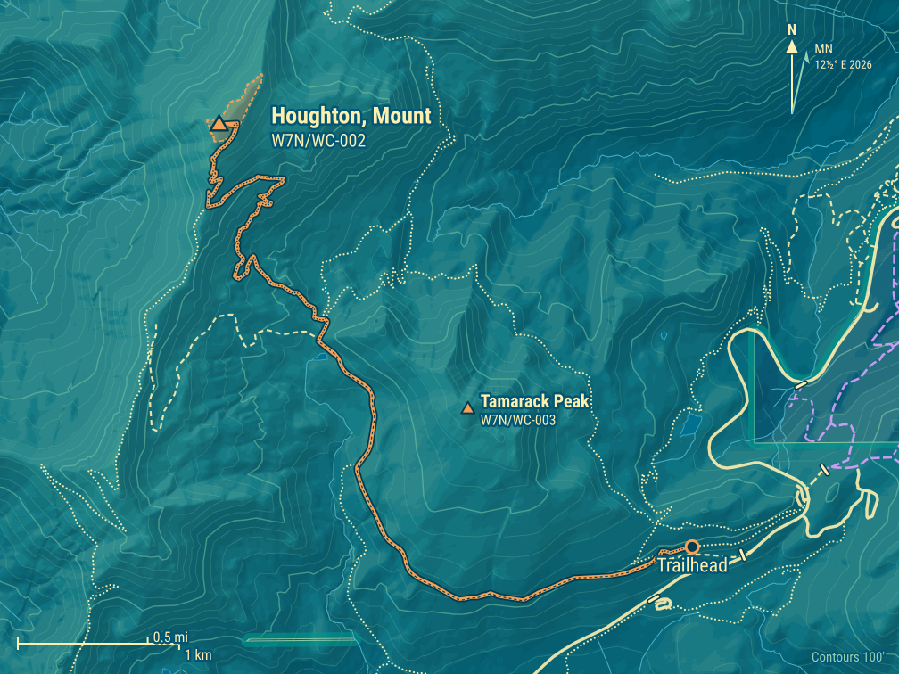
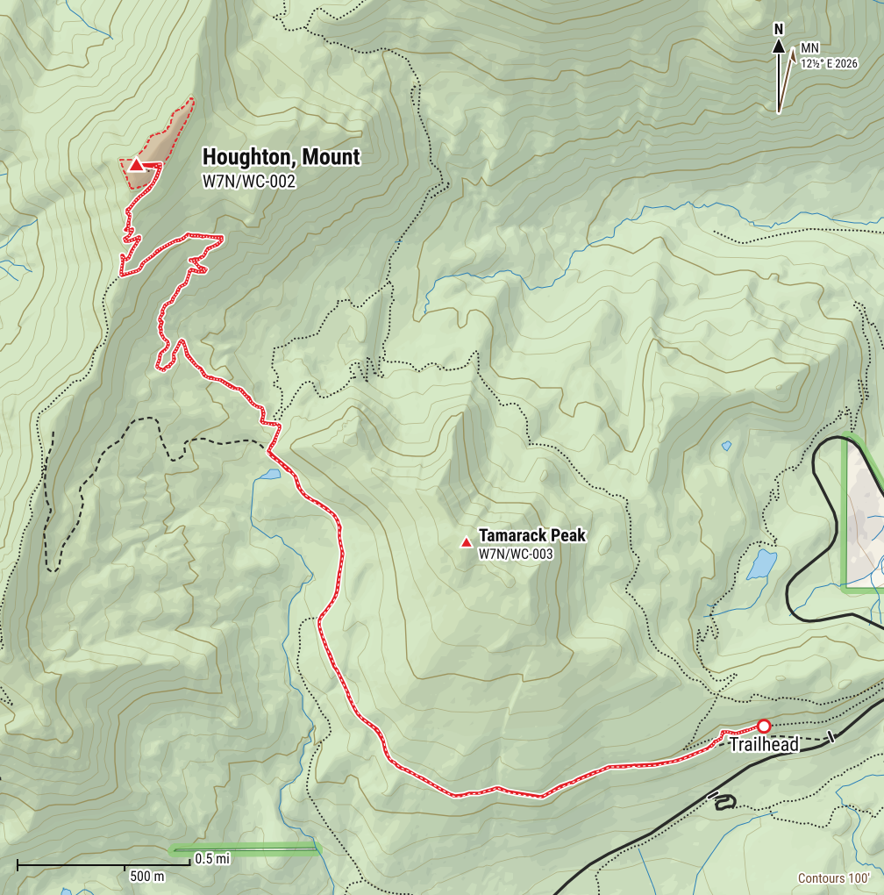
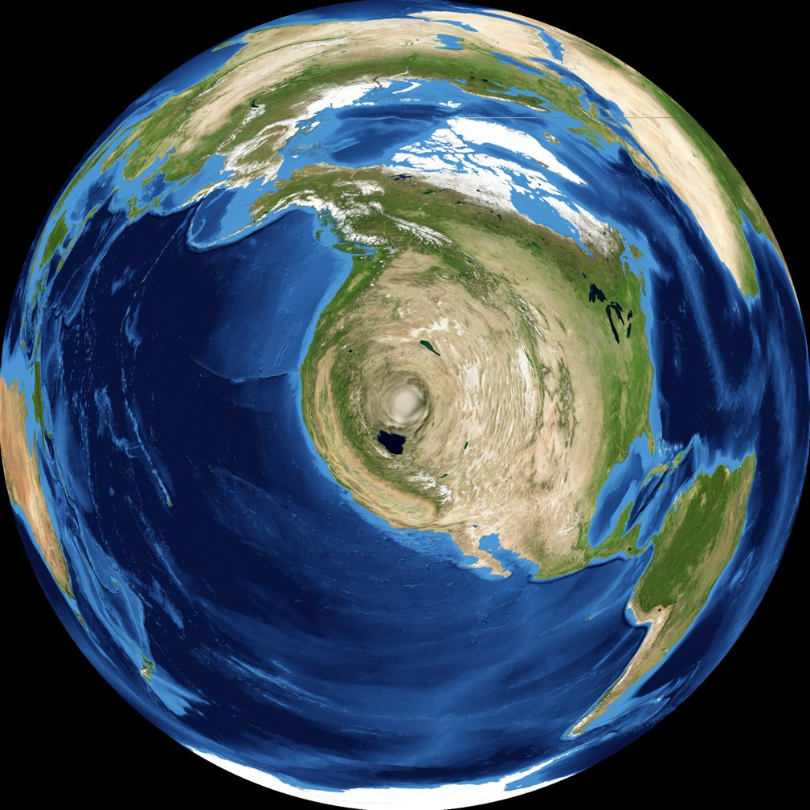
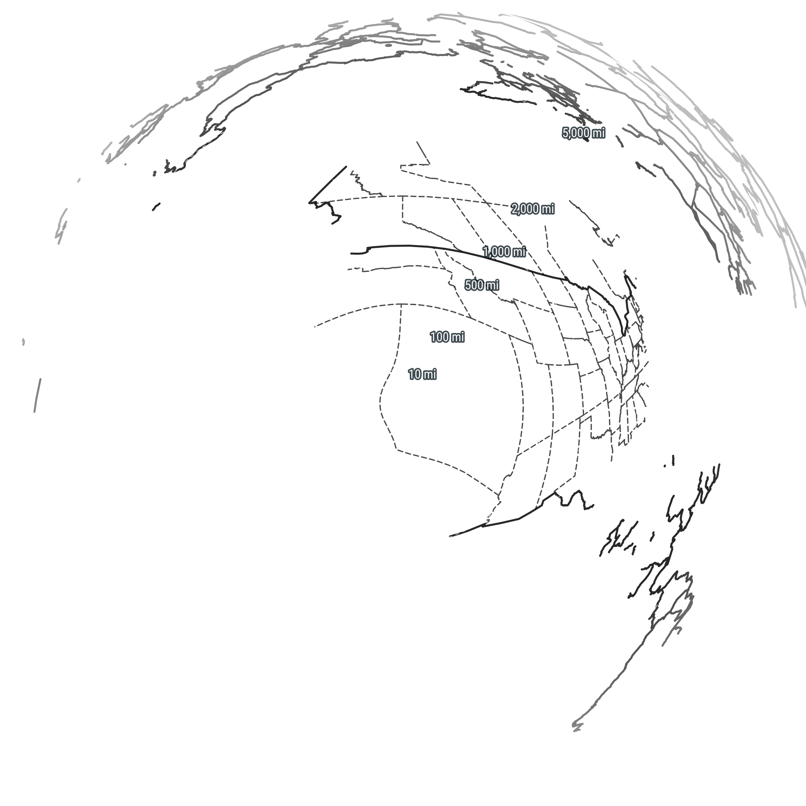
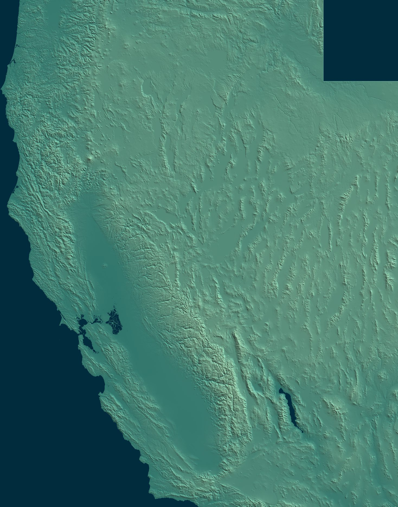
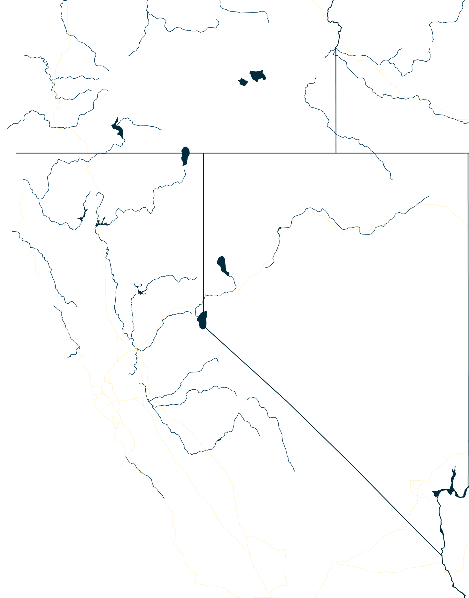
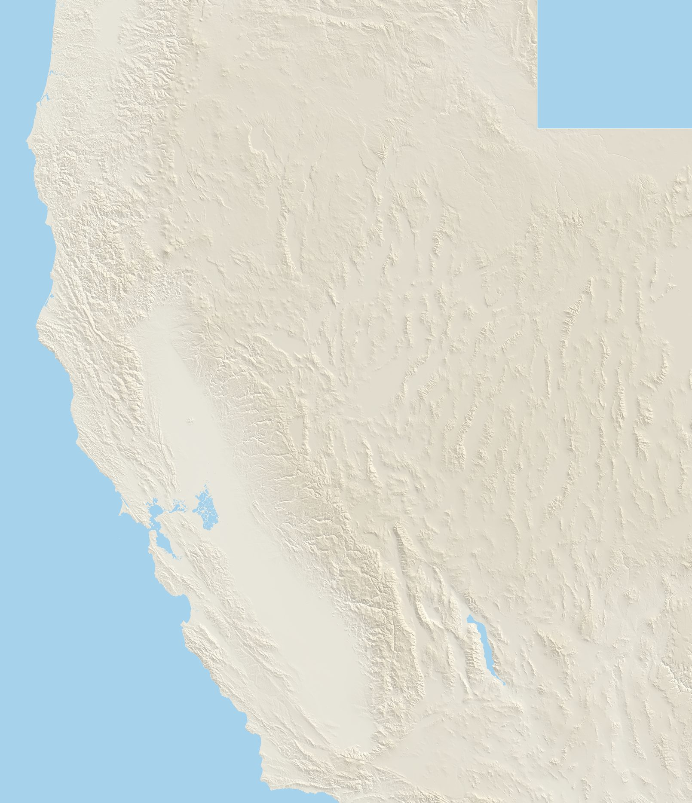
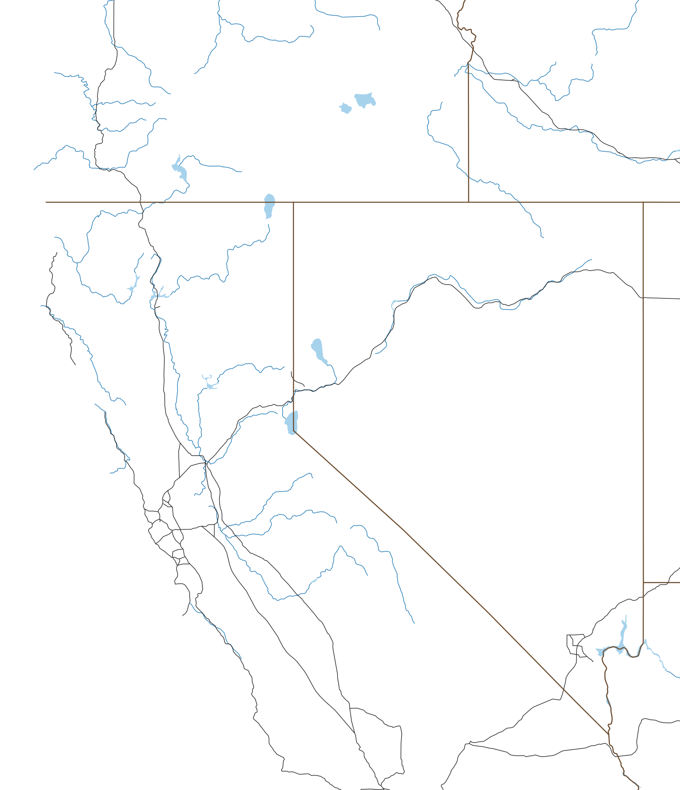

From the summit, looking east-southeast: Slide Mountain in the middle, Tamarack Peak on the right, and the valleys toward Reno on the left.
Summit
Points 10
First activation K7MAS, 18 May 2012
Elevation 10,490′ (3,197 m)
Prominence 750′ (229 m)
Isolation 1.2 mi (2.0 km)
Region NV-Washoe County
County Washoe, Nevada
Grid DM09ai
Land Toiyabe National Forest (Forest Service)
Designation Rose - Galena Roadless Area; Mt. Rose Wilderness
POTA park US-4391 Humboldt-Toiyabe National Forest/Mount Rose Wilderness Area
Route and radio
Trailhead Tahoe Meadows Trailhead, 8,940′ (2,725 m)
Access Paved road
Red tape None
Round trip 8.6 mi (13.8 km), 7.5 h
Elevation gain 1,890′ (576 m)
Transport Hiking, Class 1
Cell service Top: T-Mobile, Verizon good; AT&T fair · all the way up
Towers, power lines tower 1.3 km S
RF nearby: 1,180 licensed stations within 30 km
What to bring, the cheapest radio that still works here, on the AJ6X RF scale : HF: rung 1 of 4, uSDX or QMX, about $150: anything works. VHF: rung 2 of 4, TH-D75A, about $650: only the best receiver copes (thanks to WPMF290, public safety on 154.13 MHz, 1.3 km S, 96 dBµV/m). Or on a budget: Baofeng + TinyFilter, about $70.
Field strength at the summit from each station's power and distance, less an estimate of the terrain in between. A rough guide, by a rung either way: antenna patterns aren't known, and the noise from a site's equipment is in no licence. Data: FCC licences (2026-10-31), NOAA Weather Radio, OpenStreetMap.
Further down: Map · Aerial photo · QSO map · Summit to summit · Log
Mount Houghton is the second highest of the four 10-point summits clustered around Mount Rose, in Washoe County, Nevada, high above Incline Village and Lake Tahoe: Mount Rose (10,776′), Mount Houghton (10,490′), Tamarack Peak (9,897′) and Slide Mountain (9,698′). It’s in the Mount Rose Wilderness, on the Humboldt-Toiyabe National Forest.
We went hiking for the weekend with our friend Derek W7DLZ . If you chase SOTA in the West, you know the call: six times Mountain Goat, with over 900 activations on more than 300 summits (SOTLAS , November 2026). He was the first Nevada-grown activator to make Mountain Goat twice (SOTA Reflector , 2024), and one of the top two US activators by points in 2025. He is a great inspiration to our family!
Getting there
The hike starts at the Tahoe Meadows Trailhead on the Mount Rose Highway (NV-431), just below the pass, at about 8,940′, with parking and restrooms (Forest Service ). From there it’s the Tahoe Rim Trail, around Tamarack Peak and past Third Creek Pond, then up the ridge to the top.
No parking fee in the summer, but the lot fills up on weekends and holidays: start early. In winter, parking is along the plowed shoulder of the highway, also free as far as I know (it’s Nevada, so California’s Sno-Park permits don’t apply), and it fills up on snowy weekends (Truckee Meadows Parks Foundation ).
When: summer and early fall, once the snow is gone.Water: none on the trail (the pond is not for drinking without a filter).Time: about 3 hours up for us, with a long chat on the way; 8.6 miles round trip.Wind: the summit is exposed. Bring a warm layer and gloves, even in September.Radio: low RFI on top. HF and 2m both work fine.
The way up
This is a long, pleasant walk: lots of miles with gentle slopes, then a reasonable climb at the end. My GPS says 4.4 miles and about 1,600′ of climbing to the top.
It was a warm day, perfect for walking. On our way up we met two gentlemen coming down, and spent a good 20 minutes talking to them. They were involved with search and rescue, out for a hike.
Salsify, also called goat's beard, gone to seed. Fitting, on a SOTA hike!
Walking around Tamarack Peak, with Lake Tahoe on the left.
Then past a nice lake, Third Creek Pond, and on through the whitebark pines. They look amazing up here, twisted and bleached by the wind. Whitebark pines can live for over a thousand years, and they depend on a single bird, the Clark’s nutcracker, to plant their seeds: it hides them in the ground for the winter and forgets some of them. Since 2022 they’re listed as threatened under the Endangered Species Act, because of blister rust, beetles and a warming climate (U.S. Fish and Wildlife Service ).
Through the old whitebark pines.
Further up, looking down toward Tamarack Peak.
Almost there, looking back.
Summit
At the edge of the activation zone, we did the “complete activation”: stepping into the activation zone one at a time, and working everyone in the party on 2m FM. Derek included!
The summit itself is great: a nice view all around, and low RFI. It was a windy day, though: the forecast for the summit was around 45°F with a southwest wind of about 20 mph, gusting to 35. So we set up a little below the summit, near a bush that shielded us a bit from the wind.
We set up the antenna on the mast as usual, but instead of guying it, we tied the mast to the bush with Nite Ize Gear Ties. These ties are the best: when there’s a suitable support around, they’re our first choice. We still carry the guys and spikes, but the ties are much faster.
From the top, looking northeast toward Mount Rose.
Our mascot made it to the top, too.
The summit cairn.
The view from the summit, east-southeast: Slide Mountain in the middle, Tamarack Peak on the right.
Activation
6 September 2026
Radio Elecraft KX2
Antenna 40m EFHW
Antenna support Carbon fiber mast, tied to a bush with Nite Ize Gear Ties
Also on the summit W7DLZ
Activators AJ6X (14), KO6MFP (11), KO6MFO (8)
Bands 15m (14), 40m (7), 2m (6), 20m (5), 10m (1)
Modes CW (27), FM (6)
On air 22:01–23:46 UTC
First the summit dance at the edge of the zone, on 2m FM, at 3 PM: KO6MFO, KO6MFP, Derek and me, everyone working everyone.
Then the HF station, on 15m CW, and the band was open! Japan (four stations), Brazil, and Australia, plus a summit to summit with AF6SA on Robbs Peak (W6/NS-266) for all three of us. The kids worked Japan and Brazil too. Then 20m, around the US, one on 10m, and the kids finished on 40m. In all, 8 contacts for KO6MFO, 11 for KO6MFP, and 14 for me.
Finally, with fingers getting cold from the wind chill, we packed up and left.
A reminder: a sturdy bush and a few Gear Ties beat guys and spikes, every time there is one.
And back again
This is a long hike, but one of the more interesting ones, because of all the different segments: the meadows, the trail around Tamarack Peak, the pond, the old pines, the ridge, and the summit.
On the way down we passed by the lake again. It looked nice on the way up; in the evening light on the way down, it looked gorgeous.
Third Creek Pond, on the way down.
Map


Full map (in full colour, a letter page to print) · © OpenStreetMap contributors · land BLM, PAD-US, MAPLand · roads USFS · trails USGS · elevation and activation zone USGS 3DEP · Zone GeoJSON (all )
8,000′
9,000′
10,000′
11,000′
0
2
4
6
8 mi
activation zone
Track: 8.6 mi, 1,892′ of climbing, 8,898′ to 10,483′ · GPX track Cell service, 4G, from the carriers' maps:
Aerial photo
QSO map


W6/NS-266
On the summit with us: KO6MFP ↔ KO6MFO · 2m FM KO6MFP ↔ AJ6X · 2m FM KO6MFO ↔ KO6MFP · 2m FM KO6MFO ↔ AJ6X · 2m FM K5TR heard AJ6X · 15m CW · 16 dB · 16 wpm · 22:42Z K3PA-1 heard AJ6X · 15m CW · 18 dB · 16 wpm · 22:42Z K9IMM heard AJ6X · 15m CW · 13 dB · 16 wpm · 22:42Z N9CO heard AJ6X · 15m CW · 10 dB · 16 wpm · 22:43Z N9CO heard AJ6X · 15m CW · 9 dB · 16 wpm · 22:55Z AC0C-1 heard AJ6X · 15m CW · 19 dB · 16 wpm · 22:43Z TI7W heard AJ6X · 15m CW · 8 dB · 16 wpm · 22:43Z VE6WZ-3 heard AJ6X · 20m CW · 13 dB · 16 wpm · 23:04Z VE6WZ heard AJ6X · 20m CW · 13 dB · 16 wpm · 23:04Z VE6WZ heard AJ6X · 20m CW · 22 dB · 16 wpm · 23:14Z VE6WZ-3 heard AJ6X · 20m CW · 22 dB · 16 wpm · 23:14Z VE6AO heard AJ6X · 20m CW · 13 dB · 16 wpm · 23:12Z W6YX heard AJ6X · 10m CW · 3 dB · 16 wpm · 23:19Z W6YX heard KO6MFP · 40m CW · 22 dB · 16 wpm · 23:25Z W7DLZ · 2m FM K6YK · 10m CW K6YK · 40m CW K4QS · 15m CW JS1IFK · 15m CW JA1VVH · 15m CW JH1MXV · 15m CW PY2FRQ · 15m CW JG0AWE · 15m CW VK2ZRD · 15m CW KX0Y · 20m CW W5ODS · 20m CW WX1S · 20m CW K4ZSR · 20m CW N5URL · 20m CW WW7D · 40m CW KK6MT · 40m CW AC6M · 40m CW K6CPR · 40m CW AF6SA · W6/NS-266 · 15m CW
Summit to summit on 2 m
1,999 activated summits in reach of Mount Houghton on 2 m at 5 W, most activated first.
Rubber duckies, FM: 499. Mount Diablo W6/CC-045 , Big Hill W6/NS-290 , Donner Ridge W6/NS-181 , Leviathan Peak W6/SN-039 Half-waves, FM: 197. Vollmer Peak W6/NC-298 , Black Mountain W6/NC-150 , Mount Tamalpais W6/CC-063 , Dry Creek Knoll W6/ND-392 Yagis, CW: 648. Mount Davidson W6/NC-423 , Mount Pinos W6/CC-002 , Cerro Noroeste W6/SC-001 , San Bruno Mountain W6/CC-072 Long shots, yagis, CW, half of the time: 248. Frazier Mountain W6/CC-003 , Mount Scott W7O/CS-003 , Hillman Peak W7O/CS-008 , Walker Mountain W7O/CE-030 Very long shots, yagis, CW, a tenth of the time: 407. Paulina Peak W7O/CE-009 , Tumalo Mountain W7O/CM-011 , Odell Butte W7O/CE-032 , Lookout Mountain W7O/CM-038




W7O/CE-009 Paulina Peak, 308 mi W7O/CM-011 Tumalo Mountain, 334 mi W7O/CE-032 Odell Butte, 303 mi W7O/CM-038 Lookout Mountain, 322 mi W7O/CE-058 Pine Mountain, 313 mi W7O/CE-068 Pine Benchmark, 314 mi W7O/CM-005 Mount Bachelor, 333 mi W7O/CM-046 Royce Mountain, 307 mi W7O/CS-157 Upper Table Rock, 267 mi W6/SC-378 Black Hill, 279 mi W7O/CM-028 Davis Mountain, 311 mi W6/SS-285 Bald Mountain, 247 mi W7O/CS-195 Tipsoo Peak, 290 mi W7O/CS-036 Garwood Butte, 290 mi W7O/CE-074 Hampton Butte, 307 mi W7O/CS-089 Bald Mountain, 246 mi W7O/CM-015 Fuji Mountain, 319 mi W6/SC-353 Valencia Peak, 286 mi W7O/CS-060 Hershberger Mountain, 287 mi W7O/CE-014 North Paulina Peak, 312 mi W6/CC-036 Santa Ynez Peak, 332 mi W7O/CM-001 South Sister, 343 mi W6/IN-049 Red Mountain, 183 mi W6/CC-028 Figueroa Mountain, 317 mi W6/SS-405 Wyleys Knob, 280 mi W7O/CE-187 Agency Hill, 251 mi W7O/SC-267 3334, 272 mi W6/IN-045 5396, 214 mi W6/SC-056 Ranger Peak, 319 mi W7O/CE-053 China Hat, 306 mi W6/SS-194 Trail Peak, 222 mi W6/SC-159 Hi Mountain, 283 mi W7O/SC-385 3992, 263 mi W6/SC-357 Cerro San Luis Obispo, 283 mi W6/ND-281 Quarry Benchmark, 278 mi W7O/CS-004 Mount Bailey, 289 mi W7O/WV-004 Fairview Peak, 326 mi W6/CC-024 Badger Mountain, 222 mi W7N/ES-093 Elko Mountain, 252 mi W7O/CS-181 3739, 255 mi W6/SC-207 Tessajera Benchmark, 276 mi W7O/SC-055 Ben Johnson Mountain, 258 mi W7O/SC-287 3100, 273 mi W6/SS-317 Piute Peak, 282 mi W7O/CE-091 Fox Butte, 299 mi W7N/CK-015 Angel Peak, 316 mi W6/IN-036 7900, 182 mi W7O/SC-099 Fielder Mountain, 275 mi W7O/WV-002 Bohemia Mountain, 325 mi W7O/CE-081 Drake Butte, 326 mi W7O/CE-265 6057, 326 mi W7O/NE-018 Strawberry Mountain, 350 mi W7O/CS-062 Rustler Peak, 259 mi W6/SC-339 Bishop Peak, 282 mi W7O/CE-274 5740, 328 mi W6/SC-028 Peak Mountain, 306 mi W7O/CE-084 Mule Deer Ridge, 327 mi W7O/CE-039 Lookout Mountain, 346 mi W7O/CS-046 Smith Rock, 253 mi W7O/CE-137 Table Rock, 269 mi W7O/SC-312 2380, 271 mi W6/SC-081 Long Benchmark, 300 mi W7O/CM-007 Ball Butte, 339 mi W7O/CS-108 Olson Mountain, 267 mi W7O/SC-014 King Mountain, 288 mi W7N/ES-116 7048, 239 mi W7O/SC-016 Mungers Butte, 270 mi W6/SC-272 Bald Mountain, 290 mi W7O/CE-078 Quartz Mountain, 301 mi W7O/CE-317 East Butte, 304 mi W7O/CE-157 Pine Ridge, 310 mi W6/SS-371 Morris Peak, 274 mi W7O/SC-123 Wilcox Peak, 275 mi W6/SS-451 Five Fingers, 275 mi W7O/SC-263 3420, 276 mi W7O/SC-094 Walker Mountain, 283 mi W6/SS-361 Mace Benchmark, 286 mi W6/SC-220 2649, 293 mi W7O/SC-098 Wildhorse Lookout, 309 mi W7O/CM-123 6693, 314 mi W6/SC-069 Zaca Peak, 316 mi W7O/CM-027 Cultus Mountain, 326 mi W7O/CM-004 Broken Top, 340 mi W7O/NE-033 Indian Spring Butte, 348 mi W6/SS-298 9060, 247 mi W7O/SC-236 3924, 252 mi W7O/SC-214 5288, 267 mi W7O/SC-015 Holcomb Peak, 268 mi W7O/CS-085 Whaleback, 283 mi W7O/CS-039 Sherwood Butte, 287 mi W6/SC-425 Brown Mountain, 291 mi W6/SS-643 Terese Benchmark, 291 mi W7O/CE-154 Spring Butte, 298 mi W7O/CM-025 Sheridan Mountain, 328 mi W6/SS-287 9348, 234 mi W7O/SC-101 Wellington Butte, 261 mi W6/SS-318 Owens Peak, 270 mi W6/SS-348 7895, 283 mi W7O/SC-063 Pocket Knoll, 284 mi W6/SS-434 5521, 300 mi W7O/CM-013 The Twins, 320 mi W7N/CK-043 Gass Peak, 329 mi W7N/CK-017 Potosi Mountain, 336 mi W6/SS-272 Blackrock Mountain, 236 mi W6/SS-290 Jackass Peak, 240 mi W6/SS-274 Smith Mountain, 241 mi W6/SS-623 Kennedy Peak, 252 mi W6/SS-621 7540, 252 mi W7O/CE-028 Hager Mountain, 260 mi W6/NC-536 Flint Ridge, 265 mi W7O/SC-228 3980, 270 mi W7O/CS-156 Cinnabar Mountain, 273 mi W7O/CS-095 Bald Mountain, 275 mi W6/NW-381 Gasquet Mountain, 275 mi W6/SN-042 Skinner Peak, 279 mi W6/SS-356 Sorrell Peak, 285 mi W7O/SC-048 Onion Mountain, 289 mi W7N/ES-050 Dolly Varden Mountains HP, 293 mi W7O/CE-150 Muttonchop Butte, 296 mi W6/SC-100 Treplett Mountain, 298 mi W7O/CE-103 Willow Butte, 299 mi W7O/CS-093 Pig Iron Mountain, 299 mi W7O/CE-117 Green Butte, 300 mi W7O/SC-013 Brandy Peak, 305 mi W7O/CS-094 Illahee Rock, 309 mi W7O/CM-022 Maklaks Mountain, 311 mi W6/SC-054 Cachuma Mountain, 318 mi W7N/CK-032 Pas Rump, 333 mi W7O/CE-059 Wolf Mountain, 345 mi W6/ND-191 5020, 178 mi W6/SS-597 10755, 221 mi W6/NW-219 Buckhorn Bally, 233 mi W6/ND-122 Ophir Mountain, 246 mi W7O/SC-107 Collings Mountain, 252 mi W6/SN-037 Cannell Peak, 255 mi W6/SS-616 8443, 259 mi W6/SS-336 8108, 261 mi W7O/CS-059 Sand Ridge, 263 mi W7O/SC-258 3507, 263 mi W7O/SC-018 Page Mountain, 265 mi W6/NW-303 Gordon Mountain, 268 mi W6/SN-043 Cook Peak, 269 mi W7O/SC-158 Nugget Butte, 270 mi W7O/SC-229 3980, 271 mi W7O/SC-010 Kerby Peak, 271 mi W7O/SC-242 3842, 272 mi W6/SS-393 Russell Peak, 275 mi W7O/SC-176 Bolt Mountain, 277 mi W7O/CS-101 Round Top, 279 mi W7O/SC-081 Eight Dollar Mountain, 281 mi W7O/CS-050 Bald Crater, 282 mi W7O/SC-095 Sexton Mountain, 288 mi W7O/CE-055 Stams Mountain, 289 mi W6/ND-171 Black Mountain, 290 mi W7O/SE-044 Star Mountain, 297 mi W6/CT-101 Black Mountain, 298 mi W7O/CS-082 Twin Lakes Mountain, 302 mi W7O/CE-136 Firestone Butte, 302 mi W7O/CS-097 Red Butte, 306 mi W6/SC-027 Ortega Peak, 331 mi W7O/CM-036 Williamson Mountain, 332 mi W7O/SE-025 Antelope Mountain, 334 mi W7N/CK-031 North Potosi Peak, 336 mi W7O/CM-016 Devils Hill, 339 mi W7O/NE-037 Lookout Mountain, 350 mi W6/NE-258 Lakeview Benchmark, 221 mi W6/SS-249 10137, 224 mi W7N/WP-076 Treasure Hill, 239 mi W7N/NS-217 Burton Mountain, 239 mi W6/SS-608 9156, 241 mi W6/SS-294 9220, 242 mi W6/ND-128 Haiwee Ridge, 246 mi W7N/EN-024 Wheeler Mountain, 246 mi W6/SS-328 Pine Mountain, 248 mi W6/SS-619 8180, 250 mi W6/SS-255 9980, 251 mi W6/SS-305 Taylor Dome, 256 mi W7O/SC-021 Humpy Mountain, 258 mi W6/SS-327 Cannel Benchmark, 260 mi W6/SS-375 7140, 261 mi W6/SS-345 Chimney Peak, 261 mi W6/SS-360 Bales Benchmark, 262 mi W7O/SC-011 French Peak, 264 mi W6/SS-342 Sawtooth Peak, 265 mi W7N/NN-269 Hot Creek Butte, 265 mi W7O/SE-099 Diamond Craters HP, 267 mi W7O/CS-078 Bessie Rock, 268 mi W7O/SC-012 Little Grayback Peak, 270 mi W7O/SE-028 Riddle Mountain, 271 mi W6/SS-347 Mount Jenkins, 272 mi W6/NC-458 High Dome, 273 mi W7O/CS-146 Board Mountain, 277 mi W7O/SC-102 Bald Mountain, 278 mi W6/NW-384 High Divide, 280 mi W7O/SC-254 3580, 280 mi W7O/CS-044 Desert Cone, 280 mi W7O/SC-103 Black Butte, 281 mi W7O/SC-049 Elk Mountain, 281 mi W6/SC-165 West Garcia Mountain, 282 mi W7O/CS-121 Hawk Mountain, 283 mi W7O/CE-171 East Green Mountain, 283 mi W7O/CS-127 Elkhorn Peak, 283 mi W6/SS-418 Mayan Peak, 284 mi W7O/SC-034 Nihwik Mountain, 284 mi W6/SS-414 Pinyon Mountain, 285 mi W7O/CS-113 Devils Knob, 285 mi W7O/CS-007 Hollys Ridge, 286 mi W6/SS-410 Walbrecht Peak, 286 mi W7N/LN-237 5718, 286 mi W7O/CS-057 Weaver Mountain, 289 mi W7O/SC-297 2749, 289 mi W7O/SC-017 Cedar Springs Mountain, 289 mi W7O/SC-096 Buckhorn Mountain, 289 mi W7O/CS-159 6045, 289 mi W7O/SC-280 3380, 290 mi W7O/SC-146 London Peak, 293 mi W6/SC-320 Loma Pelona, 294 mi W7O/SC-141 Malone Peak, 294 mi W7O/SC-252 3605, 296 mi W7O/SC-074 Mount Peavine, 297 mi W7O/CE-130 Frederick Butte, 297 mi W7O/SC-223 4255, 297 mi W7O/SC-093 Buckhorn Mountain, 298 mi W6/CT-113 Flannagan Benchmark, 298 mi W7O/CE-096 Indian Butte, 298 mi W7O/SE-051 Crowcamp Mountain, 299 mi W7O/SC-390 3272, 299 mi W7O/CS-091 Quartz Mountain, 300 mi W7O/SE-032 Dry Mountain, 300 mi W6/SC-197 Buckhorn Ridge, 301 mi W7O/SC-220 4300, 301 mi W7O/CS-017 Cowhorn Mountain, 302 mi W7O/CS-107 Cavitt Mountain, 302 mi W7O/CE-146 Little Odell Butte, 302 mi W7O/CS-109 Black Butte, 302 mi W7O/CS-067 Potter Mountain, 305 mi W7N/LN-061 Arizona Peak, 306 mi W6/CT-059 Tehachapi Mountain, 307 mi W7O/CS-110 Lookout Mountain, 308 mi W7N/CK-007 Macks Peak, 310 mi W7O/SC-240 3860, 310 mi W6/SC-035 5147, 312 mi W7O/SE-018 King Mountain, 314 mi W6/SC-030 5687, 317 mi W6/SC-392 4580, 317 mi W7O/SC-100 Gobblers Knob, 318 mi W7O/SE-017 Calamity Butte, 323 mi W7O/CE-111 West Butte, 323 mi W7N/LN-095 Ella Mountain, 323 mi W7O/NE-083 Gold Hill, 324 mi W7N/CK-023 La Madre Mountain, 326 mi W6/SC-039 Hildreth Peak, 328 mi W7O/NE-069 Knox Mountain, 335 mi W7O/NE-204 6460, 337 mi W7O/CM-002 North Sister, 347 mi W6/SS-599 Sharknose Ridge, 225 mi W6/SS-232 10860, 227 mi W7N/ES-108 7153, 228 mi W6/SS-256 Templeton Mountain, 229 mi W6/SC-451 1390, 230 mi W6/NW-257 4645, 231 mi W6/SS-312 Hockett Peak, 231 mi W6/ND-151 Daylight Peak, 240 mi W7N/NS-196 CA/NV Boundary Monument 93, 241 mi W6/ND-190 5020, 243 mi W6/ND-250 4403, 243 mi W7N/WP-060 Corduroy Mountain, 243 mi W7N/ES-126 6470, 243 mi W6/SS-424 Capitol Rock, 244 mi W6/SS-365 7420, 245 mi W6/ND-118 Whitecap Mountain, 249 mi W7N/EN-059 8367, 250 mi W6/SS-346 Baker Peak, 252 mi W7O/SC-043 Kinney Mountain, 253 mi W6/SS-620 8137, 253 mi W7N/NS-230 Black Marble, 254 mi W7O/SC-068 Steamboat Mountain, 256 mi W6/NW-315 Lems Ridge, 260 mi W6/SS-406 6370, 263 mi W7O/CS-056 Maklaks Crater, 265 mi W6/SS-435 5620, 265 mi W6/SS-433 5660, 266 mi W7N/WP-202 7529, 267 mi W7N/WP-216 Red Butte, 268 mi W7O/SC-226 4140, 268 mi W7N/WP-167 Ely Benchmark, 269 mi W6/SC-312 Rusty Peak, 272 mi W6/SS-467 Hooper Hill, 272 mi W7O/CS-190 2950, 272 mi W7O/SC-112 Elkhorn Butte, 274 mi W7O/CS-143 Burnt Peak, 275 mi W7O/CS-153 Hull Mountain, 276 mi W6/SS-368 Scodie Mountains (HP), 277 mi W7O/CS-138 Buck Rock, 277 mi W6/ND-400 7380, 277 mi W7O/SC-082 Old Baldy, 278 mi W7O/CS-135 Alco Rock, 279 mi W7O/SC-132 Tennessee Mountain, 279 mi W7O/SC-277 3220, 280 mi W7N/EN-004 Greys Peak, 281 mi W7N/LN-182 6404, 281 mi W6/SC-189 Lopez Mountain, 281 mi W7O/CS-119 Ragsdale Butte, 281 mi W6/SC-356 Cerro Romualdo, 281 mi W7O/SC-396 Sloan Mountain, 281 mi W6/SS-411 6273, 281 mi W7N/EN-062 Tennessee Mountain, 281 mi W7O/CS-128 Round Top, 282 mi W7O/CS-037 Desert Ridge, 282 mi W7N/NS-233 3180, 282 mi W7O/SC-083 Battle Mountain, 282 mi W6/ND-069 Manly Peak, 282 mi W7N/EN-042 Pine Mountain, 282 mi W7O/CS-168 4620, 284 mi W7N/LN-058 Tikaboo Benchmark, 284 mi W7O/CS-161 5588, 284 mi W7O/CS-087 Falcon Butte, 284 mi W7O/CS-070 Abbott Butte, 284 mi W7O/CS-120 Richter Mountain, 284 mi W7O/SC-042 Skeleton Mountain, 285 mi W7N/WP-106 9019, 286 mi W7O/SC-046 Panther Peak, 286 mi W6/SC-158 Pine Ridge, 286 mi W7O/CE-175 Cougar Mountain, 286 mi W7O/SC-030 Red Mountain, 286 mi W7N/EN-011 Copper Mountain, 287 mi W7O/CE-121 Round Top Butte, 287 mi W7N/NS-222 4150, 287 mi W7N/LN-234 5748, 287 mi W7O/SC-062 Saint Paul Mountain, 288 mi W7O/CS-041 Fish Mountain, 289 mi W7O/CS-166 4780, 289 mi W7O/SC-019 Pearsoll Peak, 289 mi W7O/CS-066 Buckneck Mountain, 289 mi W7O/SC-027 Green Mountain, 290 mi W6/SC-132 3518, 290 mi W7N/NS-218 Devils Hole Hills HP, 290 mi W7O/CS-045 Rattlesnake Mountain, 291 mi W6/SC-370 989, 291 mi W7N/NS-216 Johnnie Range HP, 291 mi W6/ND-295 Eagle Mountain, 291 mi W7N/NS-223 4112, 292 mi W7O/SC-147 Emily, Mount, 292 mi W6/ND-185 Shadow Mountain, 292 mi W7N/LN-307 ""Pahroc Summit Peak"", 292 mi W7N/NS-139 Jaybird Benchmark, 293 mi W7N/ES-068 Bald Peak, 294 mi W7O/SC-039 Freeland Mountain, 294 mi W7N/EN-002 Jarbidge Peak, 295 mi W7O/CS-065 Black Rock, 295 mi W7N/NS-200 Last Chance Range HP, 295 mi W7N/NS-116 6938, 296 mi W7O/SC-264 3418, 296 mi W7N/NS-226 High Peak, 298 mi W6/SC-394 4175, 298 mi W7O/CS-162 5302, 298 mi W7O/CE-109 Beales Butte, 299 mi W7O/SC-033 Hobson Horn, 299 mi W7O/CE-131 Poly Top Butte, 300 mi W7O/SC-078 Grayback, 301 mi W7O/SC-241 3860, 301 mi W7O/CS-024 Sawtooth Mountain, 301 mi W7O/SC-080 Reuben, Mount, 302 mi W7O/SE-021 Mahogany Mountain, 303 mi W7O/SC-022 Sugarloaf Mountain, 304 mi W6/SC-228 2509, 304 mi W7O/SE-046 Spring Mountain, 304 mi W7O/CM-042 Ringo Butte, 306 mi W7O/CS-071 McGowan Mountain, 308 mi W7O/CM-023 Redtop Mountain, 308 mi W7O/CS-139 Sampson Butte, 309 mi W7O/CS-197 Harding Butte, 309 mi W7N/ES-041 Pisgah, Mount, 310 mi W7N/LN-110 Ely, Mount, 310 mi W6/CT-251 6362, 311 mi W7O/SC-091 Dutchman Butte, 312 mi W7O/SC-086 August Knob, 312 mi W7N/ES-048 Toano 2 Benchmark, 313 mi W6/SC-034 Fox Mountain, 313 mi W6/SC-072 Hurricane Deck, 313 mi W7O/SC-059 Bolivar, Mount, 313 mi W7O/CM-018 Mount Yoran, 313 mi W7O/SC-246 3740, 314 mi W7O/SC-090 Hanging Rock, 314 mi W6/ND-228 Grass Valley Wilderness HP, 315 mi W7N/CK-042 6958, 316 mi W7O/SC-272 3289, 316 mi W7O/SC-273 3274, 316 mi W6/SC-401 3685, 317 mi W7O/SE-059 Monument Peak, 317 mi W7O/SE-093 Three Fingers Rock, 318 mi W7N/CK-012 9678, 318 mi W7N/CK-011 Sheep Peak, 318 mi W7O/SE-065 Jones Butte, 319 mi W7O/SE-035 Whiskey Mountain, 319 mi W6/SC-013 San Rafael Mountain, 320 mi W6/SC-051 4738, 320 mi W7O/NE-074 West Myrtle Butte, 323 mi W7O/WV-007 Grouse Mountain, 324 mi W6/SC-355 Santa Rita Hills, 325 mi W6/SC-062 Little Pine Mountain, 327 mi W7O/CM-024 Irish Mountain, 329 mi W7O/SE-145 5910, 329 mi W7O/SE-146 5905, 330 mi W7O/CM-124 6242, 335 mi W7O/CM-040 Horse Mountain, 337 mi W7O/CE-040 Spanish Peak, 351 mi W6/CC-003 Frazier Mountain, 320 mi W7O/CS-003 Mount Scott, 270 mi W7O/CS-008 Hillman Peak, 276 mi W7O/CE-030 Walker Mountain, 289 mi W6/SC-004 Tecuya Mountain, 315 mi W7O/CS-147 Roxy Ann Peak, 256 mi W6/CC-005 Reyes Peak, 327 mi W6/SS-449 5200, 209 mi W7O/CS-075 Soda Mountain, 231 mi W7O/CS-081 Grizzly Peak, 246 mi W6/NC-367 1502, 176 mi W6/IN-050 Poverty Hills, 182 mi W7O/CS-021 Dutchman Peak, 243 mi W7O/CS-009 Dutton Ridge, 271 mi W7O/CS-102 Anderson Butte, 251 mi W7O/CS-034 Big Red Mountain, 242 mi W7O/CS-099 Green Springs Mountain, 236 mi W6/IN-048 5213, 212 mi W7O/SC-023 Tallowbox Mountain, 260 mi W7O/CS-074 Burton Butte, 237 mi W7O/SC-071 Woodrat Mountain, 256 mi W7O/CS-027 Wagner Butte, 243 mi W6/SC-003 Haddock Mountain, 328 mi W7O/CS-053 Rye Spur, 244 mi W7O/SC-044 Isabelle, Mount, 264 mi W7O/CS-010 Applegate Peak, 271 mi W6/SS-636 Alabama Hills, 211 mi W7O/CS-083 Robinson Butte, 245 mi W6/SC-008 Antimony Peak, 311 mi W7O/SC-051 Burton Butte, 257 mi W7O/CE-093 Skookum Butte, 285 mi W7O/CE-069 Sugarpine Mountain, 275 mi W7O/CS-011 Llao Rock, 276 mi W6/SC-327 1715, 283 mi W6/IN-017 7900, 183 mi W7O/CS-026 Crater Peak, 267 mi W6/CD-003 Telescope Peak, 268 mi W6/SC-373 Cerro Cabrillo, 279 mi W6/SS-618 Piute Lookout, 280 mi W7O/CS-002 Mount Thielsen, 286 mi W6/SS-339 Grouse Mountain, 158 mi W7O/CS-022 Red Cone, 278 mi W7O/CE-070 Glass Butte, 292 mi W6/SS-085 Cirque Peak, 218 mi W7O/CE-054 Modoc Benchmark, 237 mi W7O/SC-052 Jim Mee Peak, 259 mi W7N/CK-004 Bonanza Peak, 307 mi W7N/CK-001 Charleston Peak, 314 mi W6/NW-411 Lilly Mountain, 244 mi W7O/CE-164 Cave Mountain, 246 mi W6/ND-014 Wildrose Peak, 263 mi W7O/CE-153 Round Butte, 274 mi W7O/CE-020 Bald Mountain, 282 mi W6/SS-224 11100, 223 mi W6/SS-277 9470, 245 mi W6/SS-258 Sherman Peak, 245 mi W7N/CK-005 Sisters South, The, 311 mi W7O/CS-104 Mule Hill, 223 mi W7O/CS-086 Pilot Rock, 231 mi W6/NC-203 Bunker Hill, 244 mi W6/ND-126 Darwin Benchmark, 244 mi W6/ND-114 6140, 253 mi W7O/SC-028 Ninemile Peak, 258 mi W6/NW-205 Bear Basin Butte, 263 mi W6/SC-123 Black Mountain, 273 mi W7N/WP-025 Cave Mountain, 285 mi W7O/CE-088 Little Glass Butte, 290 mi W6/NC-335 1740, 188 mi W7O/CS-124 Mud Spring Mountain, 224 mi W7O/CS-164 5084, 227 mi W6/CD-007 Malpais Mesa, 233 mi W6/SC-205 Williams Hill, 241 mi W6/SC-144 Porter Peak, 296 mi W6/CC-018 Cuyama Peak, 317 mi W6/CV-016 Smith Mountain, 193 mi W6/SN-023 Kearsarge Peak, 196 mi W6/IN-054 Eureka Dunes, 198 mi W6/SS-227 Muah Mountain, 226 mi W7O/SC-001 Grayback Mountain, 261 mi W6/SN-052 Breckenridge Mountain, 278 mi W7O/CM-006 Diamond Peak, 311 mi W6/SS-185 Mount Bago, 195 mi W6/NE-174 Sheep Rock, 196 mi W6/CD-014 Ubehebe Peak, 223 mi W6/SS-283 Monache Mountain, 236 mi W7O/CS-084 Ogden Hill, 236 mi W7O/CS-042 Lost Peak, 249 mi W7O/SC-020 Little Grayback Mountain, 249 mi W6/SS-329 Sunday Peak, 256 mi W7O/CE-179 Little Wocus Butte, 257 mi W7O/CE-158 Wocus Butte, 257 mi W7O/SC-383 6355, 260 mi W6/SS-458 Brushy Hell Benchmark, 271 mi W7O/CS-052 Rocktop Butte, 271 mi W7O/CE-056 Antelope Mountain, 275 mi W7N/WP-034 Duck Creek Range HP, 278 mi W7N/WP-044 Camel Peak, 279 mi W7O/CS-005 Howlock Mountain, 288 mi W7O/CE-066 Marmot Butte, 291 mi W6/SC-037 Caliente Mountain, 297 mi W7N/WP-010 Bald Mountain, 302 mi W7N/CK-018 Horse Benchmark, 304 mi W7N/LN-005 Highland Peak, 306 mi W6/SN-025 Mount Tinemaha, 180 mi W6/ND-101 Brass Benchmark, 185 mi W6/ND-253 4285, 189 mi W6/SS-132 Snow Crown, 197 mi W7O/CE-271 5830, 216 mi W6/NW-429 4051, 217 mi W7N/EL-133 Marys Mountain, 217 mi W6/SS-200 11557, 218 mi W6/SS-210 Johnson Peak, 220 mi W6/NW-179 Craggy Mountain, 226 mi W6/NW-423 China Peak, 226 mi W6/SN-031 Kern Peak, 228 mi W6/SS-292 9236, 229 mi W7N/ES-107 Cedar Ridge, 232 mi W6/SS-254 Brown Mountain, 233 mi W6/SN-029 Olancha Peak, 234 mi W7O/CE-266 6057, 235 mi W6/NC-215 Fickle Hill, 235 mi W6/ND-137 Corkscrew Peak, 238 mi W7N/WP-086 9286, 239 mi W7O/CE-072 Sycan Butte, 251 mi W6/SS-324 Corral Benchmark, 255 mi W7O/SC-024 Mount Baldy, 258 mi W7O/SC-007 Tannen Mountain, 259 mi W6/SS-364 Black Mountain, 260 mi W6/NC-447 Four Brothers No 4, 261 mi W6/NW-136 Little Grayback, 262 mi W6/SS-407 6352, 265 mi W6/SS-358 Lamont Benchmark, 265 mi W6/SS-362 7475, 266 mi W6/SS-400 Lightner Peak, 274 mi W7O/SE-039 Duck Creek Butte, 281 mi W7O/SC-026 Fiddler Mountain, 284 mi W6/SC-118 Midway Peak, 289 mi W7O/WV-001 Miller Mountain, 291 mi W7N/NS-040 Stirling, Mount, 294 mi W7N/CK-014 Wheeler Benchmark, 302 mi W7N/WP-008 Washington, Mount, 303 mi W6/SC-053 Pleito Hills, 309 mi W6/SC-022 Eagle Rest Peak, 309 mi W7N/CK-002 Mummy Mountain, 314 mi W7O/CM-009 Maiden Peak, 315 mi W6/SC-026 5860, 319 mi W6/SC-018 Black Mountain, 329 mi W6/SC-017 White Mountain, 330 mi W7N/EM-122 General Thomas Hills, 166 mi W6/IN-021 7045, 175 mi W6/IN-020 Mount Nunn, 177 mi W6/NE-136 6300, 191 mi W6/SC-239 2430, 191 mi W6/ND-090 6586, 192 mi W6/ND-084 Zinc Benchmark, 193 mi W6/ND-105 6310, 194 mi W6/ND-100 6373, 195 mi W6/ND-089 Eureka Peak, 198 mi W6/ND-145 5694, 203 mi W6/SS-581 Polychrome Peak, 204 mi W6/ND-135 5846, 204 mi W7N/EL-152 Carlin Peaks, 216 mi W7N/EL-215 Marys Mountain, South, 216 mi W6/NW-151 Blue Ridge, 217 mi W7O/CE-269 5832, 218 mi W6/NW-310 4087, 218 mi W7O/CE-075 Drum Hill, 219 mi W7O/SE-043 Whitehorse Butte, 221 mi W7N/EL-189 6830, 222 mi W6/IN-034 8492, 222 mi W6/ND-119 Lost Burro Benchmark, 223 mi W6/NW-284 4356, 223 mi W7N/ES-121 Diamond Hills, 225 mi W7N/WP-213 7116, 226 mi W6/SC-226 Curry Mountain, 227 mi W7N/ES-123 Juniper Benchmark, 227 mi W7N/ES-101 Spring Canyon Mountain, 228 mi W6/ND-051 Galena Benchmark, 229 mi W7N/NS-204 Springdale Mountain, 230 mi W7O/SE-019 Table, The, 231 mi W6/SS-311 Fish Benchmark, 232 mi W6/ND-146 5660, 232 mi W7N/ES-100 Grindstone Mountain, 233 mi W7N/NS-210 Oasis Mountain, 234 mi W6/SS-331 Eye Benchmark, 236 mi W7O/CE-125 Cooks Mountain, 237 mi W7N/EN-080 Blitzen, Mount, 238 mi W7O/CE-134 Coleman Hills HP, 239 mi W6/SS-648 Oat Mountain, 239 mi W6/NW-292 Johnny O'Neil Ridge, 240 mi W6/NW-297 White Cloud Mountain, 240 mi W6/SS-326 Onion Meadow Peak, 240 mi W6/SS-266 Lookout Mountain, 242 mi W6/SS-602 9611, 243 mi W6/SS-340 8060, 247 mi W7O/CE-064 Hamelton Butte, 250 mi W7O/CS-098 Bieberstedt Butte, 250 mi W7O/SC-035 Baldy Peak, 250 mi W7O/SE-063 Jackass Mountain, 251 mi W6/SC-109 Alder Peak, 251 mi W6/ND-055 Pinto Peak, 252 mi W6/SS-330 Tobias Peak, 252 mi W7O/SE-160 5020, 253 mi W7O/CE-116 Soloman Butte, 254 mi W6/CC-061 Mount Mars, 255 mi W7O/CS-032 Luther Mountain, 255 mi W6/SC-269 2178, 256 mi W6/CC-074 Orick Hill, 256 mi W7O/SC-009 Steve Peak, 257 mi W6/ND-068 7204, 259 mi W6/SC-255 2323, 259 mi W7N/WP-121 Robinson Benchmark, 261 mi W7O/CS-043 Bunker Hill, 261 mi W7O/SC-006 Althouse Mountain, 261 mi W6/NC-442 5845, 261 mi W7N/EN-023 Pennsylvania Hill, 262 mi W7N/WP-147 8340, 263 mi W6/SS-386 Oak Ridge, 263 mi W6/NW-163 Sanger Peak, 264 mi W7N/EN-068 8269, 264 mi W7O/CS-033 Goose Egg, 265 mi W7O/CS-028 Goose Nest, 265 mi W7N/EN-103 Ungina Wongo, 265 mi W6/SS-436 5620, 269 mi W7O/CS-016 Union Peak, 269 mi W7N/WP-052 Telegraph Peak, 270 mi W7O/CE-085 Pothole Butte, 271 mi W6/SC-238 Frog Pond Mountain, 272 mi W6/ND-007 Sentinel Peak, 273 mi W6/ND-056 7500, 277 mi W7N/EN-031 Merritt Mountain, 277 mi W6/SC-104 Pine Mountain, 278 mi W6/ND-064 7312, 279 mi W6/SC-082 Machesna Mountain, 281 mi W6/SC-186 2896, 281 mi W7O/CS-126 Threehorn Mountain, 284 mi W7N/LN-055 Badger Mountain, 285 mi W6/SC-447 Coon Peak, 286 mi W6/SC-105 Branch Mountain, 287 mi W7N/EN-016 Coon Creek Peak, 290 mi W6/SC-127 3575, 293 mi W7N/WP-009 Lincoln Peak, 304 mi W6/SC-138 3460, 305 mi W7O/CM-017 Hamner Butte, 308 mi W7N/LN-007 Wilson, Mount, 308 mi W7N/CK-003 McFarland Peak, 309 mi W7N/CK-009 Hayford Peak, 317 mi W6/SC-014 Madulce Peak, 321 mi W6/NC-423 Mount Davidson, 175 mi W6/CC-002 Mount Pinos, 315 mi W6/SC-001 Cerro Noroeste, 314 mi W6/CC-072 San Bruno Mountain, 177 mi W6/CC-052 Mount Umunhum, 184 mi W6/NC-191 El Sereno, 185 mi W6/NC-432 Chabot 2 Benchmark, 162 mi W6/NC-209 Sierra Morena, 185 mi W6/ND-037 Lookout Mountain, 123 mi W6/NC-399 Coyote Peak, 177 mi W6/SC-002 San Emigdio Mountain, 311 mi W6/SC-155 Mount Bielawski, 187 mi W6/NC-407 Richardson East Benchmark, 172 mi W6/NC-268 Rocky Ridge, 156 mi W7O/CS-019 Mount Ashland, 239 mi W7O/CE-051 Hamaker Mountain, 217 mi W6/CC-075 Mount Caroline Livermore, 169 mi W6/CC-071 Point Reyes Hill, 180 mi W7O/CS-030 McDonald Peak, 240 mi W6/SC-005 Escapula Peak, 313 mi W6/ND-041 8126, 129 mi W6/CC-062 Santa Rosalia Mountain, 188 mi W6/NC-182 Willson Peak, 175 mi W7O/CE-073 Chase Mountain, 219 mi W6/NC-353 Burdell Mountain, 165 mi W6/CC-055 Fremont Peak, 197 mi W6/NC-435 Tiburon Peninsula, 169 mi W6/NC-398 1180, 158 mi W6/NC-542 Point Reyes, 190 mi W6/NC-178 Ben Lomond Mountain, 194 mi W6/ND-026 Gilbert Peak, 126 mi W7O/CS-073 Table Mountain, 239 mi W6/NC-410 San Pedro Mountain, 166 mi W6/NC-350 Loma Alta, 170 mi W6/ND-144 Dante Benchmark, 277 mi W6/NC-379 Taylor Mountain, 161 mi W6/SC-458 Loma Alta, 219 mi W6/NC-378 Mount Wittenberg, 179 mi W6/NC-417 Abrott Benchmark, 157 mi W6/ND-393 8185, 133 mi W6/NC-221 China Grade Benchmark, 192 mi W6/ND-387 Gaylor Peak, 104 mi W6/ND-029 Banner Ridge, 135 mi W6/NC-434 Bay Hill, 180 mi W6/NC-406 Sulphur Springs Mountain, 146 mi W6/CC-060 Bald Mountain, 151 mi W6/SC-213 Hawkins Peak, 208 mi W7O/CS-068 Chinquapin Mountain, 235 mi W6/SN-001 Mount Whitney, 210 mi W6/SC-149 North Chalone Peak, 211 mi W7O/CS-058 Old Baldy, 236 mi W6/WH-004 Campito Mountain, 158 mi W6/WH-006 County Line Hill, 160 mi W6/NC-174 Wasno Ridge, 174 mi W6/IN-015 Tollhouse Benchmark, 174 mi W7O/SE-001 Steens Mountain, 239 mi W6/SS-306 Deer Mountain, 124 mi W6/CD-005 Mazourka Peak, 190 mi W6/SS-334 Big Baldy, 193 mi W6/SS-284 Earthquake Dome, 126 mi W7O/CS-100 Parker Mountain, 227 mi W6/ND-378 Sheep Mountain, 156 mi W6/NC-419 Fitch Mountain, 163 mi W6/SS-313 Indian Rock, 109 mi W7N/HU-089 Winnemucca Mountain, 163 mi W6/NC-430 Little Mountain, 167 mi W6/SC-153 South Chalone Peak, 211 mi W6/ND-047 Casa Diablo Mountain, 143 mi W6/NC-037 Elk Mountain, 160 mi W6/NC-023 Horse Mountain, 162 mi W6/IN-042 Crater Mountain, 177 mi W7O/CS-049 Surveyor Mountain, 231 mi W7O/CS-012 Pelican Butte, 248 mi W6/NC-165 Mount Hood, 153 mi W6/CC-070 Barnabe Mountain, 175 mi W6/NC-101 Mount Sizer, 170 mi W6/NC-277 Bills Hill, 178 mi W7O/CS-001 Mount McLoughlin, 248 mi W6/SC-301 Spikes Peak, 173 mi W6/IN-014 8500, 182 mi W6/NE-194 Schonchin Butte, 186 mi W6/SS-354 Park Ridge, 187 mi W6/NE-312 Horsethief Butte, 196 mi W7O/CS-006 Aspen Butte, 235 mi W6/ND-067 Blind Spring Hill, 134 mi W6/NC-187 Chamisal Mountain, 221 mi W7O/CS-061 Buck Mountain, 227 mi W7O/CS-088 Little Chinquapin Mountain, 234 mi W6/SN-045 Miami Mountain, 133 mi W6/NC-025 French Ridge, 155 mi W6/NC-042 Pine Mountain, 164 mi W6/IN-018 7900, 182 mi W6/NC-265 Table Mountain, 185 mi W6/SS-314 Buck Rock, 189 mi W6/ND-077 6965, 196 mi W6/NC-446 West Log Spring Ridge, 158 mi W7O/CE-004 Light Peak, 205 mi W6/SN-040 Half Dome, 112 mi W6/ND-048 Trafton Mountain, 126 mi W6/NC-305 Bennett Mountain, 158 mi W6/NC-008 Big Signal Peak, 169 mi W6/NC-496 Burra Burra Peak, 172 mi W6/NE-074 Miller Mountain, 200 mi W6/ND-052 Antelope Mountain, 125 mi W6/NC-204 Sonoma Mountains (HP), 158 mi W6/NS-325 Sawmill Mountain, 104 mi W6/SS-388 Musick Mountain, 153 mi W6/NC-487 2580, 181 mi W6/NC-228 2305, 195 mi W6/NC-521 Chalk Mountain, 197 mi W6/SN-003 Mount Langley, 215 mi W6/SS-471 Bullion Benchmark, 124 mi W6/WH-005 Blanco Mountain, 161 mi W6/NC-073 Cow Mountain Ridge, 168 mi W6/NC-235 Gualala Mountain, 194 mi W6/NC-537 McAbee Mountain, 195 mi W6/SS-066 Mount Gould, 196 mi W6/SC-040 Chews Ridge, 227 mi W6/NC-376 El Toro, 180 mi W6/CC-046 Loma Prieta, 185 mi W6/NC-241 Pine Mountain, 195 mi W7O/CE-002 Drake Peak, 205 mi W6/NE-036 Ball Mountain, 206 mi W7N/WP-001 Wheeler Peak, 302 mi W6/SS-257 Clouds Rest, 111 mi W6/NC-269 2031, 142 mi W6/NW-388 2197, 162 mi W6/ND-050 Chocolate Mountain, 172 mi W6/NC-216 Eureka Hill, 195 mi W6/SC-261 Pinyon Peak, 221 mi W6/IN-010 Cerro Gordo Peak, 226 mi W7O/CS-029 Little Aspen Butte, 232 mi W6/ND-028 8580, 116 mi W6/NC-343 Wragg Ridge, 135 mi W6/NC-317 Wiedemann Hill, 157 mi W6/WH-010 Station Peak, 160 mi W6/NC-477 Nesbit Ridge, 175 mi W6/NE-131 Black Butte, 189 mi W6/SC-108 Black Mountain, 210 mi W6/NC-078 North Slide Peak, 233 mi W6/NS-406 Crocker Ridge, 107 mi W6/SS-457 Goat Mountain, 142 mi W6/SS-461 Thornberry Mountain, 143 mi W6/NE-059 Sugar Hill, 172 mi W6/NE-210 Timber Mountain, 174 mi W6/NC-380 1380, 179 mi W6/NC-288 Scarper Peak, 184 mi W6/CN-020 Orr Mountain, 193 mi W6/CC-038 Cahto Peak, 196 mi W6/NC-381 1380, 198 mi W7O/CE-243 7270, 205 mi W6/NE-031 Willow Creek Mountain, 210 mi W7O/CE-015 Abert Rim, 212 mi W7O/CE-083 Hogback Mountain, 221 mi W6/SC-043 Black Butte, 229 mi W6/SC-224 2577, 237 mi W6/ND-142 Mount Perry, 275 mi W6/NS-075 Polly Dome, 106 mi W6/SS-601 9717, 131 mi W6/SS-156 Pilot Knob, 156 mi W6/SS-399 Mount Stevenson, 156 mi W6/NC-354 1575, 170 mi W6/NW-222 Buckhorn Bally, 171 mi W7N/EL-174 Hickison Benchmark, 172 mi W6/NC-372 Koerber Benchmark, 177 mi W7N/EL-017 Lewis, Mount, 179 mi W6/NC-242 Pole Mountain, 180 mi W6/IN-008 Andrews Mountain, 186 mi W6/IN-011 8980, 187 mi W6/NC-401 1140, 201 mi W7O/CE-006 Twelvemile Peak, 207 mi W6/CC-022 Santa Rita Peak, 210 mi W7O/CE-057 Stukel Mountain, 211 mi W7O/CE-152 Indian Spring Ridge, 222 mi W7O/CS-106 Grizzly Mountain, 224 mi W7O/CE-143 Porter Butte, 228 mi W6/CC-041 King Peak, 229 mi W7O/CE-112 Spence Mountain, 235 mi W6/NW-073 Condrey Mountain, 240 mi W7O/SC-004 Whisky Peak, 254 mi W6/NS-317 South Kibbie Ridge, 94 mi W6/NE-303 6371, 112 mi W6/NE-090 Table Mountain, 120 mi W7N/EM-124 Candelaria Mountain, 128 mi W6/NC-279 1972, 136 mi W6/NE-235 Haney Mountain, 141 mi W6/ND-381 Patricia Peak, 143 mi W6/NE-046 Payne Peak, 154 mi W6/WH-014 Dan Benchmark, 162 mi W6/CC-033 Bohemotash Mountain, 167 mi W6/IN-029 Hurd Peak, 169 mi W6/SS-032 Cloudripper, 170 mi W6/IN-012 Juniper Benchmark, 181 mi W6/CC-015 Hayfork Bally, 196 mi W6/NE-016 Goosenest, 204 mi W6/NE-177 5650, 205 mi W6/CC-021 San Benito Mountain, 208 mi W7O/CE-189 Link 2 Benchmark, 222 mi W7O/CE-025 Morgan Butte, 224 mi W6/CC-023 Cone Peak, 242 mi W7O/CE-092 Applegate Butte, 251 mi W7O/SE-060 Stockade Buttes So., 289 mi W7O/SE-053 Stockade Mountain, 293 mi W6/NS-412 5380, 94 mi W6/NS-323 Bear Mountain, 102 mi W6/SS-481 Smith Peak, 106 mi W6/SN-044 Trumbull Peak, 114 mi W6/NC-402 1140, 133 mi W6/NC-319 1820, 139 mi W6/SS-120 Treasure Benchmark, 153 mi W6/NC-456 Cow Mountain, 167 mi W6/ND-073 7055, 171 mi W6/NC-197 Mount Misery, 171 mi W6/NC-356 West Twin Peaks, 182 mi W7O/CE-001 Crane Mountain, 189 mi W6/SC-215 Panoche Hills, 190 mi W6/SS-243 Mitchell Peak, 192 mi W6/CC-017 Black Lassic, 203 mi W7O/CE-012 Grizzly Peak, 205 mi W6/SN-002 Mount Williamson, 205 mi W6/SC-262 2236, 206 mi W7O/CE-050 Cox Benchmark, 212 mi W6/NE-082 Eagle Rock, 213 mi W7O/SE-004 Beatys Butte, 213 mi W7O/CS-092 Chicken Hills HP, 218 mi W6/NW-129 McKinley Mountain, 225 mi W7O/CE-286 5204, 235 mi W6/NC-485 Bear River Ridge, 240 mi W7O/SC-005 Craggy Mountain, 259 mi W6/SS-353 7860, 117 mi W6/NE-276 Inskip Hill, 127 mi W6/SS-341 8044, 135 mi W7N/EM-180 6090, 139 mi W6/SS-323 Shuteye Peak, 140 mi W6/NE-290 Milk Peak, 145 mi W6/SS-245 Kaiser Peak, 147 mi W6/SS-269 9691, 148 mi W6/NE-151 Happy Camp Mountain, 156 mi W6/NC-425 916, 158 mi W6/SS-240 East Three Sisters, 159 mi W6/NW-391 1913, 162 mi W6/SS-244 Eagle Peak, 163 mi W6/SS-472 Burrough Mountain, 163 mi W6/CN-027 Haycock Peak, 167 mi W6/SS-218 Round Mountain, 168 mi W6/IN-026 12362, 169 mi W6/SS-226 Sugarloaf, 169 mi W6/NC-517 1679, 170 mi W7N/NS-117 Booker Mountain, 171 mi W6/ND-093 Sugarloaf Mountain, 173 mi W6/NE-125 Black Fox Mountain, 173 mi W6/NE-207 5145, 174 mi W6/NC-386 Black Mountain, 175 mi W6/NC-226 Kickham Peak, 176 mi W6/IN-019 7848, 183 mi W6/NW-107 6617, 183 mi W6/NC-368 1500, 188 mi W6/NE-021 8122, 190 mi W6/CC-034 Plummer Peak, 190 mi W6/SC-246 2389, 191 mi W6/NC-164 Cold Spring Mountain, 193 mi W7O/CE-036 Dog Mountain, 197 mi W6/NE-148 Mount Hebron, 197 mi W6/NE-196 Sheepy Peak, 200 mi W6/NC-414 Mathison Peak, 201 mi W6/SN-004 Mount Tyndall, 205 mi W7O/CE-016 Blue Mountain, 208 mi W6/CC-029 Laguna Mountain, 212 mi W6/SS-092 12837, 217 mi W6/IN-007 Pleasant Point, 223 mi W6/NW-145 6026, 227 mi W7O/CE-024 Swan Lake Point, 231 mi W7O/SE-007 Blue Mountain, 233 mi W6/NW-089 Lake Mountain, 237 mi W7O/CE-042 Saddle Mountain South, 237 mi W7O/CS-023 Brown Mountain, 242 mi W7O/CE-049 Calimus Butte, 243 mi W7O/SE-116 9348, 246 mi W7O/SC-003 Lake Peak, 256 mi W7O/CE-005 Yamsay Mountain, 259 mi W6/NS-161 8126, 83 mi W6/NS-388 Kibbie Ridge, 86 mi W6/NS-186 7761, 89 mi W6/NS-187 Smith Peak, 98 mi W6/NS-359 Peoria Mountain, 101 mi W6/NS-324 Ascension Mountain, 104 mi W6/SS-644 Wagner Ridge, 107 mi W6/SS-316 Boundary Hill, 110 mi W6/SS-381 Devil Peak, 125 mi W6/SS-428 Mount Savage, 127 mi W6/SS-372 Speckerman Mountain, 131 mi W7N/EM-167 Candelaria Hills, 133 mi W6/SS-633 Sivels Mountain, 135 mi W6/NC-220 Cedar Roughs, 137 mi W6/NC-284 1965, 141 mi W7N/EM-114 Emigrant Peak, 145 mi W6/NE-088 Grouse Mountain, 146 mi W6/NC-131 2943, 148 mi W7N/EL-199 Vigus Butte, 148 mi W6/NC-009 Crockett Peak, 152 mi W6/SS-126 Spire Peak, 152 mi W6/SS-047 Royce Peak, 153 mi W6/IN-027 12260, 154 mi W6/NC-441 Bear Wallow Ridge, 155 mi W6/SS-422 Flume Peak, 155 mi W6/NW-386 Mule Mountain, 160 mi W6/SN-014 Mount Emerson, 160 mi W6/WH-011 10140, 161 mi W6/NC-082 Geyser Peak, 161 mi W6/NC-318 Walpert Ridge, 161 mi W6/SS-108 Mount George Davis, 161 mi W6/NC-092 Poverty Ridge, 164 mi W6/NC-013 Etsel Ridge, 164 mi W6/SN-008 Mount Darwin, 165 mi W6/NE-167 Bear Mountain, 165 mi W6/NC-090 North San Felipe Hills, 168 mi W6/SS-335 Patterson Mountain, 170 mi W6/SN-018 Mount Goode, 170 mi W6/WH-012 Black Mountain, 170 mi W6/NW-288 4308, 172 mi W6/NC-362 Hicks Mountain, 172 mi W6/NW-034 Black Rock Mountain, 174 mi W6/NE-205 Girard Ridge, 174 mi W6/NW-264 North Hoadley Peaks, 176 mi W6/NW-234 Eastman Benchmark, 176 mi W6/ND-111 6173, 179 mi W6/NE-071 Red Cap Mountain, 180 mi W6/NE-297 Pumice Stone Mountain, 180 mi W6/SS-444 Pine Ridge, 181 mi W7O/CE-035 Coleman Rim, 185 mi W6/IN-016 8060, 185 mi W6/IN-033 9207, 186 mi W6/ND-134 5862, 190 mi W6/NE-010 The Whaleback, 191 mi W6/NW-054 Weaver Bally, 191 mi W6/NC-377 1420, 191 mi W6/NC-373 1475, 191 mi W6/NW-226 Thompson Peak, 193 mi W6/NE-080 Deer Mountain, 195 mi W6/SS-253 Kettle Peak, 195 mi W6/NC-327 Ramsey Ridge, 196 mi W6/NC-345 1634, 196 mi W7O/CE-079 Barry Point, 197 mi W7O/CE-277 5625, 197 mi W6/SS-217 Mount Silliman, 198 mi W6/SS-024 University Peak, 198 mi W6/NW-178 Coffee Pot, 201 mi W6/SS-299 Panther Peak, 201 mi W7O/CE-250 6764, 202 mi W6/SC-417 Harris Benchmark, 205 mi W6/SC-047 4850, 208 mi W7O/CE-052 Lone Grave Butte, 208 mi W6/SC-423 2540, 208 mi W6/IN-002 Mount Inyo, 209 mi W6/SC-055 The Picachos, 210 mi W6/SC-077 Joaquin Ridge, 210 mi W7N/EL-019 Prospect Peak, 211 mi W7O/CE-077 Quartz Butte, 211 mi W6/IN-001 Keynot Peak, 211 mi W7O/SE-010 Mahogany Butte, 212 mi W7O/CE-019 Coleman Rim, 212 mi W6/NW-112 6520, 213 mi W6/SC-063 Hepsedam Peak, 214 mi W6/IN-004 New York Butte, 215 mi W6/SS-176 Mount Anna Mills, 216 mi W7O/CE-008 Warner Peak, 216 mi W7O/SE-042 Buckskin Mountain, 217 mi W7O/CE-259 6317, 218 mi W6/SS-429 Blue Ridge, 219 mi W7O/CE-097 Parker Hills HP, 221 mi W6/NC-086 Grasshopper Mountain, 225 mi W6/NW-128 Indian Creek Baldy, 225 mi W7O/CE-115 Cherry Creek Benchmark, 227 mi W7O/CE-291 4954, 229 mi W6/CV-014 La Cima, 230 mi W6/SC-114 Pico Blanco, 232 mi W7O/CE-027 Green Mountain, 232 mi W6/SC-025 Junipero Serra Peak, 235 mi W7O/CE-013 Slide Mountain, 235 mi W7O/CS-014 Carmine, Mount, 236 mi W7O/CS-015 Crater Mountain, 237 mi W7O/CS-013 Mount Harriman, 238 mi W6/SC-079 4092, 239 mi W6/SC-389 4820, 239 mi W6/NW-096 Red Butte, 247 mi W7O/CE-048 Juniper Mountain, 248 mi W7O/CE-110 Little Applegate Butte, 249 mi W7N/ES-010 Liberty Peak, 255 mi W7O/CS-018 Devils Peak, 258 mi W7O/SC-008 Swan Mountain, 259 mi W7O/SE-137 6113, 268 mi W7O/SE-141 6074, 269 mi W6/CT-070 Bear Mountain, 294 mi W6/CT-114 Black Spring Benchmark, 298 mi W6/NS-337 3793, 50 mi W6/NS-152 8292, 82 mi W6/NS-418 3380, 89 mi W6/NS-140 Andrews Peak, 91 mi W6/ND-034 Cedar Hill, 99 mi W6/NS-334 Cold Spring Hill, 104 mi W6/NS-110 Daff Dome, 104 mi W6/SS-267 Fairview Dome, 105 mi W6/SS-562 Red Hills, 106 mi W6/SS-450 Big Grizzly Mountain, 112 mi W6/NE-146 6174, 114 mi W7N/PC-091 Lone Mountain, 115 mi W7N/PC-008 8980, 118 mi W7N/EM-136 6500, 118 mi W6/SS-642 Feliciana Mountain, 120 mi W6/SS-505 Williams Peak, 120 mi W6/SS-603 Horse Ridge, 121 mi W7N/EM-088 7660, 121 mi W6/NE-147 Mitchell Hill, 121 mi W6/SS-462 Sweetwater Point, 122 mi W6/NE-134 Hayden Hill, 125 mi W6/CN-018 Wilcox Peak, 125 mi W6/NE-295 7220, 125 mi W6/SS-235 Gale Peak, 126 mi W6/ND-010 9180, 127 mi W6/SS-297 9083, 128 mi W6/SS-242 Madera Peak, 128 mi W6/SS-300 Quartz Mountain, 128 mi W6/SS-396 Hogan Mountain, 129 mi W7N/WC-079 6253, 129 mi W6/SS-295 9158, 130 mi W6/NE-198 Red Rock Hill, 131 mi W6/NE-286 North Tuscan Buttes, 131 mi W6/NC-254 Junior Benchmark, 136 mi W7N/EM-096 Volcanic Hills HP, 136 mi W6/SS-322 Little Shuteye Peak, 136 mi W7N/WC-032 Boulder Mountain, 137 mi W6/NC-489 Gibson Hill, 137 mi W7N/WC-062 Pinto Peak, 137 mi W6/NC-388 1262, 139 mi W7N/PC-052 Eugene Mountains HP, 139 mi W7N/EM-008 9820, 140 mi W6/NC-321 Greeg Mountain, 140 mi W7N/EM-015 Davis Mountain, 141 mi W6/SS-125 Hilton Peak, 142 mi W6/NC-232 Bally Peak, 142 mi W6/SS-134 Mount Huntington, 143 mi W6/NE-230 Long Valley Mountain, 147 mi W6/CN-028 Hatchet Mountain, 148 mi W6/SS-556 Lilley Mountain, 149 mi W6/SS-237 Mount Givens, 150 mi W6/NC-172 Mount Veeder, 150 mi W6/NE-113 6620, 151 mi W6/SN-017 Merriam Peak, 154 mi W6/SS-265 Black Peak, 156 mi W6/NE-292 Cedar Mountain, 157 mi W6/NC-064 Youngs Peak, 158 mi W6/NE-017 Bald Mountain, 158 mi W7N/EM-023 9149, 161 mi W6/NE-324 2535, 162 mi W6/CN-026 O'Brien Mountain, 162 mi W6/SS-038 13464, 163 mi W6/NE-280 2666, 163 mi W6/NC-181 Robison Mountain, 163 mi W6/CN-023 Hirz Mountain, 164 mi W7N/HU-100 Slumbering Hills, 164 mi W6/SN-011 Mount Mendel, 164 mi W6/NC-093 Monument Peak, 164 mi W6/NE-140 Grizzly Peak, 165 mi W6/NE-026 Buck Mountain, 166 mi W6/NW-432 3932, 166 mi W6/WH-013 8860, 166 mi W7N/NN-067 9271, 166 mi W6/NC-384 1331, 167 mi W6/NC-212 Red Hill, 167 mi W6/NC-462 Pyramid Ridge, 168 mi W7N/NN-071 Wilson, Mount, 168 mi W6/SS-089 Mount Johnson, 169 mi W6/NC-342 Redwood Mountain, 170 mi W6/IN-025 Sky Haven, 170 mi W6/SS-048 Picture Puzzle, 170 mi W7N/NS-091 Butler, Mount, 171 mi W6/NE-317 Yellowjacket Mountain, 171 mi W6/SS-008 Mount Agassiz, 172 mi W6/NW-299 4232, 172 mi W6/SC-328 Basalt Hill, 172 mi W6/NC-286 Queens Peak, 172 mi W6/NE-145 Little Black Fox Mountain, 172 mi W7N/EM-123 Gold Mountain, 172 mi W6/ND-095 6482, 172 mi W6/NC-403 1140, 172 mi W6/SS-091 Buck Mountain, 173 mi W6/SS-001 North Palisade, 173 mi W6/SC-363 Sharp Benchmark, 174 mi W7N/EM-112 Douglas Benchmark, 174 mi W6/NW-265 4563, 175 mi W6/SS-062 13104, 176 mi W6/SS-004 Middle Palisade, 176 mi W7N/EL-150 Grimes Hills, 176 mi W6/SS-043 The Thumb, 176 mi W6/NW-233 Lookout Ridge, 177 mi W6/SS-025 Ed Lane Peak, 177 mi W6/SS-023 Birch Mountain, 177 mi W6/NE-049 Medicine Mountain, 177 mi W6/NE-149 Doe Peak, 177 mi W6/IN-013 8940, 178 mi W6/SS-036 Mount Bolton Brown, 178 mi W6/NW-183 Slate Mountain, 179 mi W7N/EM-019 Harvey Peak, 179 mi W6/SS-003 Split Mountain, 180 mi W6/NE-298 Hemlock Ridge, 181 mi W6/NC-366 1509, 181 mi W6/SS-370 Converse Mountain, 182 mi W6/CN-015 Stephens Butte, 182 mi W7N/EM-031 Palmetto Mountain, 182 mi W6/NC-531 1190, 183 mi W6/NW-302 Bowerman Peak, 183 mi W6/SS-578 Striped Mountain, 184 mi W6/NC-539 3494, 184 mi W6/NW-069 Castle Crags Wilderness HP, 184 mi W6/CV-006 Campbell Mountain, 184 mi W6/NW-076 7070, 185 mi W7N/HU-099 Big Spring Butte, 185 mi W6/NE-022 Haight Mountain, 185 mi W6/NW-141 Horse Ridge Lookout, 188 mi W6/NC-333 1750, 188 mi W6/CD-004 Wünüpü Peak, 189 mi W6/SS-615 Lookout Peak, 189 mi W6/IN-009 9380, 189 mi W6/SS-083 Mount Clarence King, 191 mi W6/NW-023 8001, 191 mi W6/NC-102 Sherwood Peak, 191 mi W6/CD-002 Waucoba Mountain, 191 mi W6/SS-380 Redwood Mountain, 191 mi W6/SS-270 Mount Maddox, 191 mi W6/SN-022 Mount Cotter, 192 mi W6/SS-119 12565, 194 mi W6/IN-003 10961, 194 mi W6/SS-049 Black Mountain, 194 mi W7O/CE-256 6389, 194 mi W6/NW-171 Pickett Peak, 195 mi W6/SS-087 Mount Rixford, 195 mi W7O/CE-022 Rogger Peak, 196 mi W6/SC-185 2900, 196 mi W6/ND-072 Sandy Benchmark, 196 mi W6/NC-047 Mail Ridge, 197 mi W7O/SE-121 7418, 198 mi W6/NE-157 Little Deer Mountain, 198 mi W6/SC-085 Big Mountain, 199 mi W6/SC-157 Griswold Hills, 199 mi W6/SN-007 Mount Stanford, 200 mi W7O/CE-037 Lynchs Rim, 201 mi W6/SS-212 Winter Alta, 202 mi W6/SS-195 Big Bird Peak, 202 mi W6/SS-005 Mount Keith, 202 mi W7O/SE-002 Pueblo Mountain, 203 mi W7N/HU-001 Granite Peak, 203 mi W7N/HU-020 8580, 205 mi W6/IN-006 10088, 205 mi W6/NW-412 5640, 206 mi W7O/SE-014 Red Mountain, 206 mi W7O/CE-031 Fishhole Mountain, 207 mi W6/SN-005 Mount Barnard, 207 mi W6/CC-043 Pratt Mountain, 207 mi W7O/SE-128 6448, 207 mi W6/SS-610 Amphitheater Dome, 207 mi W7O/CE-254 6490, 208 mi W7O/SE-126 6616, 208 mi W7O/CE-010 Cougar Peak, 209 mi W6/SS-286 Paradise Peak, 209 mi W7O/CE-262 6231, 209 mi W7O/CE-255 6435, 209 mi W7O/CE-252 6650, 210 mi W6/SS-011 Mount Kaweah, 210 mi W7O/CE-257 6370, 210 mi W6/SS-002 Mount Russell, 210 mi W7O/CE-245 7156, 210 mi W6/ND-024 Dry Mountain, 210 mi W7N/HU-015 Buckskin Mountain, 211 mi W6/SC-387 Condon Peak, 212 mi W7N/EN-106 7784, 212 mi W6/IN-032 10460, 212 mi W6/NW-041 7684, 212 mi W7O/CE-172 Klamath Hills HP, 213 mi W6/SS-142 Sawtooth Peak, 213 mi W6/NW-051 Etna Mountain, 213 mi W6/NE-186 McGavin Peak, 213 mi W7O/CE-023 Shoestring Butte, 213 mi W7O/CE-253 6643, 213 mi W6/SS-037 Mount Pickering, 214 mi W6/SC-129 Mount Toro, 214 mi W7O/CE-246 7150, 215 mi W6/SS-180 Vandever Mountain, 216 mi W7O/CE-244 7207, 217 mi W6/NC-290 1940, 218 mi W6/SC-209 Buckeye Ridge, 218 mi W7O/CE-026 Yainax Butte, 218 mi W7N/ES-067 Coffin Mountain, 219 mi W7O/CE-090 Buck Mountain, 220 mi W6/CC-042 Flag Peak, 220 mi W6/NW-137 6108, 221 mi W6/ND-038 8261, 221 mi W7O/CE-268 5864, 222 mi W7N/ES-046 Piñon Range HP, 222 mi W6/NC-141 Queen Peak, 223 mi W7N/ES-047 Bunker Hill, 223 mi W6/SC-408 Paraiso Benchmark, 223 mi W6/NW-124 North Trinity Mountain, 224 mi W6/ND-053 White Top Mountain, 224 mi W7O/CE-003 Gearhart Mountain, 224 mi W7O/CE-106 Yainax Ridge, 224 mi W7N/ES-069 Robinson Mountain, 225 mi W6/SC-416 Blue Rock Ridge, 226 mi W7O/CE-007 Dead Horse Rim, 226 mi W7O/SE-026 High Peak, 227 mi W6/SC-065 Mount Carmel, 227 mi W6/IN-038 6683, 229 mi W7O/CE-062 Poker Jim Ridge, 229 mi W6/SC-041 South Ventana Cone, 231 mi W7O/SE-127 6564, 233 mi W6/NC-155 Shubrick Peak, 233 mi W6/ND-059 Hunter Mountain, 233 mi W6/SC-130 Cabezo Prieto, 233 mi W6/NW-077 Tom Martin Peak, 234 mi W6/NW-409 6460, 236 mi W7O/CE-029 Shake Butte, 236 mi W7O/CE-065 Spodue Mountain, 236 mi W6/SS-289 Slate Mountain, 237 mi W6/SC-078 Anderson Peak, 237 mi W7O/CE-086 Riverbed Butte, 237 mi W7O/CE-038 Fuego Mountain, 241 mi W7N/WP-037 10180, 242 mi W6/NW-079 Scraggy Mountain, 242 mi W6/NC-391 Moore Hill, 243 mi W6/NW-116 White Mountain, 244 mi W6/SC-121 Chalk Peak, 245 mi W7N/ES-053 8508, 247 mi W7O/SE-030 Mickey Butte, 247 mi W7O/CS-047 Cherry Peak, 252 mi W7N/ES-001 Ruby Dome, 253 mi W7N/LN-014 Worthington Peak, 253 mi W7N/ES-013 Wines Peak, 254 mi W7N/ES-002 11340, 257 mi W7N/ES-022 10529, 257 mi W7N/WP-094 South Ridge Benchmark, 259 mi W7O/CS-031 Maude Mountain, 261 mi W7O/SC-002 Lake Mountain, 261 mi W6/ND-013 Porter Peak, 276 mi W7O/SE-022 Wagontire Mountain, 277 mi W6/SC-070 McKittrick Summit, 280 mi W7N/WP-004 North Schell Peak, 285 mi W6/ND-098 Funeral Peak, 287 mi W7N/WP-003 Pyramid Peak, 304 mi W6/CC-012 Big Pine Mountain, 321 mi W6/NC-298 Vollmer Peak, 159 mi W6/NC-150 Black Mountain, 184 mi W6/CC-063 Mount Tamalpais, 173 mi W6/ND-392 Dry Creek Knoll, 126 mi W6/ND-012 Bald Mountain, 121 mi W6/NC-371 Briones Hills, 153 mi W6/SN-033 Mammoth Mountain, 128 mi W6/NC-516 Maguire Peaks, 161 mi W6/WH-008 10940, 161 mi W6/NC-151 Mount Vaca, 133 mi W6/NC-180 Mount Allison, 164 mi W6/WH-009 10660, 165 mi W6/NC-244 Sunol Peak, 160 mi W6/NC-190 Marsh Benchmark, 146 mi W6/NC-029 Copernicus Peak, 165 mi W6/WH-007 Clem Nelson Peak, 165 mi W6/NC-400 Bald Hill, 171 mi W6/CV-017 968, 131 mi W6/NC-323 Black Point, 147 mi W6/NC-331 Pine Mountain, 174 mi W6/NS-017 Tioga Peak, 103 mi W6/NC-387 1272, 142 mi W6/NC-422 990, 146 mi W6/NC-304 Big Rock Ridge, 169 mi W6/SS-276 Reversed Peak, 115 mi W6/CC-010 Anthony Peak, 165 mi W6/NC-499 Windy Point, 146 mi W6/CC-011 Hull Mountain, 160 mi W6/WH-003 Piute Mountain, 155 mi W6/NS-355 Jackson Butte, 81 mi W6/SS-320 Williams Butte, 107 mi W6/NC-300 Kreiger Peak, 142 mi W6/NC-035 Mount Isabel, 166 mi W6/NS-330 Elizabeth Peak, 89 mi W6/NS-347 Quiggs Mountain, 85 mi W6/ND-003 Glass Mountain (HP), 127 mi W7N/WC-093 Granite Hills, 22 mi W6/NS-267 6669, 46 mi W6/NW-100 Buck Rock, 165 mi W6/NS-297 6002, 68 mi W6/ND-005 Potato Peak, 89 mi W6/SS-093 Mount Starr, 146 mi W6/CC-047 Boggs Mountain, 151 mi W6/SS-421 Pilot Peak, 109 mi W6/CC-001 Mount Eddy, 192 mi W6/ND-016 Mount Biedeman - West, 94 mi W6/ND-015 9060, 94 mi W6/ND-380 False White Mountain, 103 mi W6/ND-019 Cowtrack Mountain, 112 mi W6/SS-252 White Wing Mountain, 121 mi W6/NS-348 2750, 94 mi W6/NS-344 Bear Mountain, 97 mi W6/NC-054 Discovery Peak, 158 mi W6/NE-030 Lyons Peak, 176 mi W7N/TR-033 7242, 46 mi W6/NE-216 West Bass Hill, 76 mi W6/ND-394 Hunewill Hills, 89 mi W6/NS-331 Mount Provo, 92 mi W6/ND-025 8662, 94 mi W6/NE-135 6300, 96 mi W6/SS-101 Mount Gibbs, 108 mi W6/ND-389 Crater Mountain, 112 mi W6/SS-198 San Joaquin Mountain, 120 mi W6/CN-009 Burney Mountain, 135 mi W7N/EL-105 Prometheus, Mount, 155 mi W6/NS-106 9300, 78 mi W6/NS-305 Duckwall Mountain, 95 mi W6/NS-035 Mount Hoffmann, 105 mi W6/NE-119 Cal Mountain, 113 mi W6/NE-156 Snag Hill, 126 mi W7N/EM-005 Mustang Mountain, 133 mi W6/NE-076 Manzanita Mountain, 142 mi W6/NC-340 1686, 143 mi W6/NC-136 Three Peaks, 146 mi W6/NC-012 Summit Springs Hill, 150 mi W6/NE-084 Black Mountain, 172 mi W6/NS-173 Bell Mountain, 82 mi W6/NS-225 7290, 84 mi W6/NS-310 Duckwall Ridge, 95 mi W6/SS-219 Echo Ridge, 108 mi W6/SS-146 Mount Lewis, 111 mi W6/CN-022 Soldier Mountain, 148 mi W6/NC-065 Cedar Mountain, 152 mi W6/NW-132 Shasta Bally, 168 mi W6/NS-426 Pilot Hill, 68 mi W7N/TR-041 Chet Benchmark, 79 mi W6/NS-320 Crandall Peak, 82 mi W6/NS-335 4025, 97 mi W6/SS-293 9222, 105 mi W6/CN-010 Harvey Mountain, 113 mi W6/ND-018 Granite Mountain, 116 mi W7N/PC-003 Star Peak, 125 mi W6/SS-186 Laurel Mountain, 134 mi W6/SS-207 Red Mountain, 141 mi W6/SS-188 Wheeler Crest, 144 mi W6/SS-019 Mount Tom, 154 mi W6/NS-165 Pickle Benchmark, 72 mi W6/NS-363 Donovan Hill, 75 mi W7N/TR-037 7066, 81 mi W6/NS-174 Cherry Ridge, 85 mi W6/ND-022 8740, 96 mi W6/SS-223 11105, 109 mi W6/SS-067 Kuna Peak, 112 mi W6/NE-068 Badger Mountain, 117 mi W7N/EM-042 8552, 122 mi W6/SS-068 Mount Morgan, 141 mi W6/NE-002 Warren Peak, 142 mi W6/NE-133 Widow Mountain, 145 mi W6/NC-249 2153, 146 mi W6/NC-460 Doe Peak, 147 mi W6/NC-123 Sugarloaf Mountain, 147 mi W6/CC-013 Ball Rock, 155 mi W6/NC-006 Snake Ridge, 157 mi W7N/EM-013 Piper Peak, 157 mi W6/SN-006 Mount Humphreys, 158 mi W6/NW-018 South Yolla Bolly, 162 mi W6/NC-005 Bald Mountain, 163 mi W6/CC-009 Bully Choop Mountain, 172 mi W6/NW-243 Knob Peak, 176 mi W6/NE-015 Mount Bidwell, 182 mi W6/NW-075 Bonanza King, 187 mi W7N/TR-023 7900, 44 mi W7N/PC-171 5495, 54 mi W7N/PC-169 Rocky 2 Benchmark, 57 mi W7N/PC-138 Flat Benchmark, 58 mi W6/NS-064 Disaster Peak, 62 mi W6/NS-295 Blue Mountain, 72 mi W6/NS-409 5568, 75 mi W6/NS-319 5464, 76 mi W6/NS-054 10434, 82 mi W6/NS-303 5860, 83 mi W6/NS-318 5482, 83 mi W6/NS-356 Golden Gate Hill, 87 mi W6/NS-083 Chittenden Peak, 87 mi W6/NS-341 American Camp Lookout, 90 mi W6/NS-028 Slide Mountain, 90 mi W7N/EM-075 Aurora Crater, 91 mi W7N/EM-033 8860, 91 mi W7N/EM-014 Buller Mountain, 94 mi W6/NS-007 East Shepherd Crest, 98 mi W7N/EM-018 9312, 98 mi W7N/EM-020 Table Mountain, 100 mi W6/NS-416 3700, 101 mi W6/NS-049 10542, 103 mi W7N/PC-165 Old Razorback Mountain, 106 mi W6/NS-336 Cohasset Ridge, 106 mi W6/SS-230 Cathedral Peak, 107 mi W6/ND-043 8056, 109 mi W7N/EM-040 Excelsior Mountain, 110 mi W6/NE-060 Fairfield Peak, 111 mi W6/SS-204 Vogelsang Peak, 112 mi W6/SS-168 Parsons Peak, 113 mi W6/NE-085 6964, 114 mi W6/ND-396 Adobe Hills, 116 mi W6/SN-051 Mount Ritter, 120 mi W7N/EM-092 Eastside Benchmark, 123 mi W7N/EM-036 8770, 123 mi W7N/HU-148 4872, 124 mi W6/ND-006 10220, 125 mi W7N/WC-019 Hog Ranch Mountain, 126 mi W7N/EM-022 Pilot Peak, 126 mi W7N/HU-139 Burnt Rock Peak, 126 mi W7N/EM-032 8860, 127 mi W7N/EM-039 Miller Mountain, 129 mi W6/NC-154 2798, 132 mi W7N/PC-007 New Pass Peak, 133 mi W6/SS-191 11712, 133 mi W6/NE-005 Cole Peak, 135 mi W7N/WC-057 Hart Mountain, 136 mi W6/SS-220 Virginia Pass Crag, 137 mi W6/SS-113 Mount Baldwin, 138 mi W6/NC-176 Atlas Peak, 139 mi W6/NC-306 Gravelly Ridge, 140 mi W6/NC-524 Mulligan Hill, 143 mi W6/NE-123 Hermit Butte, 145 mi W6/IN-030 11980, 147 mi W6/NC-159 McGuire Peak, 148 mi W6/NC-129 2954, 148 mi W6/SS-014 Bear Creek Spire, 150 mi W6/NC-014 Pine Kop, 151 mi W6/SS-098 12780, 151 mi W7N/EL-022 9417, 151 mi W6/SS-140 Mount Hooper, 152 mi W7N/EL-004 North Toiyabe Peak, 153 mi W6/NC-011 Goat Hill, 154 mi W7N/EM-017 Silver Peak, 160 mi W6/NC-057 Mount Stakes, 160 mi W7N/EM-030 Red Mountain, 160 mi W7N/NN-149 Salisbury Peak, 165 mi W7N/NN-001 Jefferson, Mount-South Summit, 167 mi W7N/NN-032 10098, 168 mi W7N/WC-037 Yellow Peak, 174 mi W6/NW-258 4635, 175 mi W6/NW-207 Damnation Peak, 177 mi W6/NE-045 Glass Mountain, 177 mi W6/NE-029 Mount Hoffman, 179 mi W6/NE-012 Ash Creek Butte, 183 mi W6/CC-045 Mount Diablo, 146 mi W6/NS-290 Big Hill, 42 mi W6/NS-181 Donner Ridge, 18 mi W6/SN-039 Leviathan Peak, 48 mi W6/NS-189 Gold Star Peak, 10 mi W6/NS-147 Mount Watson, 14 mi W6/CC-051 North Peak, 145 mi W6/NS-195 Grouse Ridge, 36 mi W6/NS-397 Tahoe Mountain, 30 mi W6/NS-306 Lowell Hill Ridge, 40 mi W6/NS-248 7008, 30 mi W6/NS-138 Mount Pluto, 12 mi W7N/TR-027 Captain Pomin Rock, 16 mi W6/NS-266 Robbs Peak, 38 mi W7N/WC-011 Peavine Peak, 17 mi W7N/WC-003 Tamarack Peak, 1 mi W6/NS-204 KU6J Memorial Peak - 7559, 25 mi W7N/WC-004 Slide Mountain, 3 mi W6/NC-338 Brushy Peak, 144 mi W6/NS-177 7860, 26 mi W6/NS-236 Prosser Hill, 15 mi W6/NS-264 Boca Hill, 10 mi W7N/WC-111 Rattlesnake Mountain, 14 mi W6/NS-393 7751, 21 mi W6/NS-269 6622, 42 mi W6/NC-030 Mount Saint Helena, 152 mi W7N/WC-005 Chickadee Ridge, 4 mi W6/NS-160 Sardine Peak, 19 mi W6/NS-179 Signal Peak, 32 mi W6/NS-149 Mount Lincoln, 21 mi W6/NS-296 Clyde Mountain, 39 mi W6/SN-047 Bald Mountain, 51 mi W6/SN-038 Castle Peak, 22 mi W6/NS-135 South Maggies Peaks, 29 mi W6/NS-210 Colorado Hill, 47 mi W7N/WC-001 Rose, Mount, 1 mi W6/NS-156 Lacey Benchmark, 28 mi W6/NS-132 Babbitt Peak, 21 mi W6/NS-392 7779, 48 mi W6/NS-139 North Sierra Buttes, 42 mi W6/CN-002 Lassen Peak, 115 mi W7N/TR-007 Genoa Peak, 20 mi W6/NS-162 Haskell Peak, 40 mi W6/SN-048 Banner Mountain, 55 mi W6/CC-035 Mount Konocti, 153 mi W7N/WC-028 Scott, Mount, 13 mi W6/NS-193 Sagehen Hills, 18 mi W6/SN-032 Sonora Peak, 70 mi W6/NS-108 Ralston Peak, 36 mi W6/NS-223 Pinoli Ridge, 38 mi W7N/WC-010 Virginia Peak, 39 mi W6/NS-228 Beckwourth Peak, 40 mi W6/NS-062 Red Lake Peak, 43 mi W6/NS-159 8166, 29 mi W6/NS-092 Waterhouse Peak, 39 mi W7N/TR-065 Wild Oat Mountain, 48 mi W6/ND-009 Masonic Mountain, 81 mi W7N/TR-025 Davidson, Mount, 15 mi W7N/WC-064 6607, 30 mi W6/NS-146 Verdi Peak, 11 mi W6/NS-153 Scott Peak, 19 mi W6/SN-046 Little Bald Mountain, 33 mi W6/NS-203 7605, 37 mi W6/NS-065 Hawkins Peak, 41 mi W6/NS-422 Quick Benchmark, 60 mi W6/SN-020 Mount Dana, 106 mi W6/NS-213 Schallenberger Ridge, 18 mi W6/NS-169 Land Peak, 20 mi W6/CN-006 Dixie Mountain, 46 mi W6/NS-055 Round Top, 46 mi W6/NS-121 Tinker Knob, 19 mi W6/SN-036 Mount Tallac, 31 mi W6/NS-198 Smith Peak, 48 mi W6/NS-420 Colfax Hill, 56 mi W6/CN-005 Mount Ingalls, 58 mi W6/NC-019 High Glade Benchmark, 154 mi W6/NS-155 Sand Ridge, 25 mi W6/NS-163 Webber Peak, 29 mi W6/NS-087 Little Round Top, 41 mi W7N/TR-005 Bald Mountain, 43 mi W6/NS-207 Crocker Mountain, 47 mi W6/SN-049 Slate Mountain, 53 mi W6/NS-233 Black Mountain, 58 mi W7N/TR-014 Duane Bliss Peak, 18 mi W7N/WC-014 Pond Peak, 34 mi W6/NS-395 7569, 44 mi W6/NS-133 Ellis Peak, 23 mi W6/NS-382 Pickett Peak, 40 mi W6/NS-375 Stevens Peak, 42 mi W7N/TR-042 McTarnahan Hill, 22 mi W6/NS-111 Mount Lola, 24 mi W6/CD-001 White Mountain Peak, 149 mi W7N/TR-006 Snow Valley Peak, 13 mi W6/NS-123 Carpenter Ridge, 21 mi W7N/WC-039 Freds Mountain, 31 mi W6/SN-034 Freel Peak, 33 mi W6/NS-122 8930, 51 mi W7N/TR-075 Prison Hill, 18 mi W6/NS-396 Red Star Ridge, 28 mi W6/NS-244 7052, 34 mi W6/NS-164 8090, 49 mi W6/NS-143 Bloods Ridge, 59 mi W6/NS-357 Pine Hill, 71 mi W6/NS-366 Flagstaff Hill, 73 mi W7N/PC-032 Fairview Peak, 96 mi W6/NC-451 Pinnacle Rock, 152 mi W6/NS-134 8740, 25 mi W6/NS-061 Monument Peak, 29 mi W6/NS-166 8060, 32 mi W7N/TR-026 7764, 40 mi W6/NS-125 8910, 44 mi W6/NS-076 Thimble Peak, 47 mi W6/NS-219 Bailey Ridge, 65 mi W6/NC-004 Saint John Mountain, 147 mi W6/NC-010 Goat Mountain, 148 mi W7N/WC-083 Steamboat Hills, 8 mi W6/NS-211 7481, 24 mi W6/NS-389 Buzzard Roost, 26 mi W6/NS-413 Scott Hill, 39 mi W6/NE-020 West Prospect Peak, 116 mi W7N/TR-013 8738, 13 mi W6/NS-220 7348, 17 mi W6/NS-216 Findley Peak, 35 mi W7N/WC-026 Dogskin Mountain, 39 mi W6/CC-049 Cold Spring Mountain, 137 mi W6/NS-262 6815, 27 mi W6/NS-400 Black Mountain, 36 mi W6/NS-209 Fall Creek Mountain, 37 mi W6/NS-321 Ralston Ridge, 38 mi W7N/TR-003 Siegel, Mount, 39 mi W7N/TR-004 Oreana Peak, 41 mi W6/CN-011 Mount Hough, 70 mi W6/CN-001 Mount Shasta, 186 mi W6/NS-115 Granite Chief, 21 mi W6/NS-130 8812, 24 mi W7N/TR-028 Bismark Peak, 26 mi W7N/WC-030 Spanish Springs Peak, 29 mi W6/NE-302 Beckwourth Pass Benchmark, 32 mi W6/NS-183 Thompson Peak, 72 mi W6/SN-030 Leavitt Peak, 74 mi W6/NS-128 East Twin Peaks, 22 mi W7N/WC-084 Spanish Benchmark, 24 mi W7N/WC-092 Coyote Ridge, 28 mi W6/NS-278 6420, 31 mi W6/NS-047 Jobs Peak, 33 mi W6/NS-127 Echo Peak, 34 mi W6/NS-271 Johnson Hill, 58 mi W6/NS-249 6998, 67 mi W6/ND-391 9060, 68 mi W6/NS-270 6621, 69 mi W6/ND-001 Mount Patterson, 71 mi W6/CC-006 Black Butte, 159 mi W6/NS-107 9269, 26 mi W6/NE-111 Late Benchmark, 31 mi W6/NS-316 McElroy Hill, 36 mi W6/NS-235 Clarks Peak, 68 mi W6/ND-388 Mean Benchmark, 68 mi W7N/EM-021 Bald Mountain, 70 mi W6/NC-003 Brushy Mountain, 157 mi W7N/TR-053 6460, 17 mi W6/NS-084 9647, 35 mi W6/NS-276 6460, 46 mi W6/NS-378 9795, 47 mi W6/NS-215 Eureka Peak, 51 mi W6/NS-265 Saddleback Mountain, 54 mi W6/NS-257 Delunga Peak, 54 mi W6/NS-113 9115, 57 mi W6/NS-185 Grizzly Mountain, 64 mi W6/NS-196 Grizzly Peak, 66 mi W6/CN-016 Shaffer Mountain, 80 mi W6/NE-040 Antelope Mountain, 101 mi W7N/EM-002 Trail Canyon Peak, 133 mi W7N/TR-068 5990, 17 mi W7N/TR-070 Hot Springs Mountain, 22 mi W7N/WC-090 Juniper Ridge, 27 mi W7N/WC-018 Petersen Mountain, 32 mi W6/NS-291 Wallace Peak, 34 mi W7N/TR-036 7074, 37 mi W6/NS-239 7100, 38 mi W7N/TR-051 6530, 40 mi W6/NS-275 Sally Benchmark, 43 mi W6/NS-403 6540, 44 mi W6/NS-258 6831, 46 mi W6/NS-380 9374, 47 mi W6/NS-182 Mount Elwell, 48 mi W6/NS-312 Sugarloaf, 55 mi W7N/EM-037 Aurora Peak, 93 mi W7N/WC-008 Herlan Peak, 9 mi W7N/WC-087 6075, 16 mi W6/NS-175 McKinstry Peak, 29 mi W7N/TR-019 Mineral Peak, 29 mi W6/NS-255 Red Mountain, 32 mi W6/NS-272 Johnnys Hill, 33 mi W6/NS-151 English Mountain, 34 mi W6/NS-273 6522, 40 mi W6/NS-387 8330, 42 mi W6/NS-102 The Nipple, 48 mi W6/NS-288 North Coyote Hills, 52 mi W6/NS-078 Folger Peak, 58 mi W6/NS-229 Wildcat Ridge, 74 mi W6/NS-390 7860, 25 mi W6/NS-401 6847, 29 mi W7N/WC-095 Hungry Mountain, 30 mi W6/NS-067 Pyramid Peak, 36 mi W6/NS-202 Reconnaissance Peak, 42 mi W6/NS-259 6826, 47 mi W6/NS-311 Big Hill, 54 mi W6/NS-405 Kessler Peak, 68 mi W6/NE-153 Stover Mountain, 98 mi W6/SN-028 North Peak, 99 mi W6/NS-008 Tioga Crest, 100 mi W6/CN-003 Brokeoff Mountain, 115 mi W6/NE-056 Likely Mountain, 130 mi W7N/WC-096 5950, 20 mi W6/NS-154 Lost Corner Mountain, 26 mi W6/NS-238 Haskell Peak, 27 mi W6/NS-188 Guide Peak, 29 mi W6/NS-068 Dicks Peak, 32 mi W7N/WC-089 Warm Springs Mountain, 33 mi W6/NS-377 Mount Price, 35 mi W6/NS-284 6332, 38 mi W6/NS-327 Cherry Hill, 46 mi W6/NS-096 Markleeville Peak, 47 mi W6/NS-192 7730, 50 mi W6/NS-328 5180, 59 mi W6/NS-077 Hiram Peak, 60 mi W6/NS-222 Taylor Rock, 66 mi W6/NS-023 Stanislaus Peak, 67 mi W6/NS-285 Mount Jura, 68 mi W6/NS-180 Kettle Benchmark, 70 mi W7N/EM-004 Cory Peak, 87 mi W6/NE-047 Roop Mountain, 91 mi W6/NE-051 Shinn Mountain, 95 mi W6/CN-008 Fredonyer Peak, 100 mi W6/CN-007 Mount Harkness, 105 mi W6/SS-090 Parker Peak, 113 mi W6/NS-200 7654, 25 mi W6/NS-394 7580, 26 mi W6/NS-197 Devils Peak, 27 mi W7N/WC-091 Hungry Ridge North, 31 mi W6/NS-170 Black Buttes, 33 mi W6/NS-094 Little Pyramid, 34 mi W6/NS-218 Bowman Mountain, 37 mi W6/NS-279 Sugar Loaf, 41 mi W6/NS-398 Bald Rock, 41 mi W6/NS-230 Horton Ridge, 46 mi W6/NS-252 Meadow View Peak, 51 mi W6/NS-241 McKesick Peak, 55 mi W6/NS-214 Pilot Peak, 58 mi W6/NS-339 Pike County Peak, 68 mi W6/NE-200 Bald Mountain, 75 mi W6/NE-197 5252, 76 mi W6/CN-013 Pegleg Mountain, 92 mi W6/ND-382 Black Mountain, 96 mi W6/NE-044 Spanish Springs Peak, 99 mi W6/ND-383 Lee Vining Peak, 102 mi W6/NE-092 Turner Mountain, 111 mi W6/NC-022 Cobb Mountain, 155 mi W6/NS-141 8535, 22 mi W6/NS-385 8385, 25 mi W6/NS-227 7260, 29 mi W6/NS-086 9614, 30 mi W6/NS-300 Brady Mountain, 35 mi W7N/WC-088 Seven Lakes Mountain, 40 mi W6/NS-158 Adams Peak, 41 mi W6/NS-268 6631, 45 mi W6/NS-073 Deadwood Peak, 49 mi W6/NS-251 Bunker Hill, 53 mi W6/NS-404 Deadwood Peak, 55 mi W6/NS-194 Mount Fillmore, 56 mi W6/NS-088 Lookout Peak, 57 mi W6/NS-079 Peep Sight Peak, 58 mi W7N/TR-016 8550, 68 mi W6/ND-002 South Sister, 68 mi W6/NS-417 Mount Hope, 69 mi W6/ND-390 9060, 70 mi W7N/PC-193 Rainbow Mountain, 75 mi W6/NS-057 Granite Dome, 78 mi W6/NS-212 Dyer Mountain, 85 mi W6/NS-293 6112, 86 mi W6/NE-127 Fredonyer Butte, 87 mi W6/NE-124 Chaparral Hill, 88 mi W6/NS-039 10827, 90 mi W6/NS-002 Dunderberg Peak, 95 mi W6/NS-001 Excelsior Mountain, 97 mi W6/NE-087 Whaleback Mountain, 102 mi W6/NE-007 Reading Peak, 113 mi W6/NC-118 Berryessa Peak, 129 mi W6/CC-016 Kneecap, 154 mi W7N/TR-054 Emma Peak, 18 mi W6/NS-226 7282, 24 mi W6/NS-142 Mildred Ridge, 24 mi W7N/TR-081 5088, 25 mi W7N/TR-078 5295, 27 mi W6/NS-167 Mount Ina Coolbrith, 28 mi W7N/TR-012 Lyon Peak, 29 mi W7N/TR-008 Como, Mount, 33 mi W7N/TR-064 Churchill Butte, 34 mi W6/NS-100 9390, 37 mi W6/NS-307 5780, 37 mi W6/NS-246 Quartz Hill, 38 mi W6/NS-408 5850, 42 mi W6/NS-414 4210, 43 mi W7N/TR-010 Eagle Mountain, 43 mi W7N/TR-084 Arm Benchmark, 44 mi W7N/TR-021 Nevada Hill, 44 mi W7N/WC-009 Tule Peak, 46 mi W6/NS-136 Thornburg Peak, 48 mi W6/NE-069 7121, 48 mi W7N/WC-015 State Line Peak, 48 mi W6/NS-190 7740, 50 mi W6/NS-066 Raymond Peak, 51 mi W6/NS-109 9205, 51 mi W6/NS-232 Rattlesnake Peak, 51 mi W6/NS-081 Reynolds Peak, 52 mi W6/NS-280 6374, 55 mi W6/SN-035 Tryon Peak, 57 mi W6/NS-060 10082, 57 mi W6/NS-168 8041, 58 mi W6/NS-093 Bull Run Peak, 59 mi W6/NS-063 Arnot Peak, 60 mi W6/NS-381 9361, 61 mi W6/NS-070 Airola Peak, 61 mi W6/NS-286 Grass Valley Bald Mountain, 63 mi W6/NS-126 The Dardanelles West, 65 mi W6/NS-402 6618, 65 mi W6/NS-250 Claremont, 66 mi W6/NS-340 Oregon Peak, 66 mi W6/NS-332 4180, 69 mi W6/NS-098 9401, 69 mi W7N/TR-002 Bald Mountain, 71 mi W7N/PC-192 Wheat Peak, 71 mi W6/NS-346 Chitterden Ridge, 72 mi W6/NS-101 Eagle Peak, 73 mi W6/NS-362 Daugherty Hill, 74 mi W6/NS-085 Castle Rock, 75 mi W6/ND-395 Mount Emma, 77 mi W6/NS-298 5978, 78 mi W6/NS-056 Black Hawk Mountain, 79 mi W6/NS-201 Coyote Peak, 81 mi W7N/PC-187 5226, 82 mi W6/NS-282 Red Hill, 82 mi W6/NE-152 Goodrich Mountain, 88 mi W6/NE-126 Horse Lake Mountain, 91 mi W6/NS-014 Camiaca Peak, 94 mi W7N/EM-016 Hicks, Mount, 95 mi W6/NS-176 Butt Mountain, 98 mi W6/NS-003 Mount Warren, 101 mi W6/NE-305 South Twin Buttes, 102 mi W6/NE-034 North Caribou, 103 mi W6/NE-013 Red Cinder, 106 mi W6/NE-054 Crater Mountain, 107 mi W6/NE-024 Black Butte, 108 mi W6/NE-061 Crater Butte, 109 mi W7N/EM-035 Moho Mountain, 116 mi W7N/EM-041 8562, 117 mi W6/CN-004 Crater Peak, 130 mi W6/SS-175 12076, 134 mi W6/NC-099 Black Diamond Ridge, 143 mi W6/NC-069 Red Mountain, 145 mi W6/NC-007 Sheetiron Mountain, 150 mi W6/NC-062 Seigler Mountain, 152 mi W6/CC-004 North Yolla Bolly, 172 mi W7N/WC-051 Louse Benchmark, 16 mi W7N/TR-030 Flowery Range HP, 22 mi W6/NS-242 7062, 23 mi W7N/TR-018 Rawe Peak, 26 mi W7N/TR-029 7380, 27 mi W6/NS-105 9310, 28 mi W6/NS-171 Snow Mountain, 29 mi W6/NS-184 Old Man Mountain, 31 mi W7N/TR-032 Rusty Benchmark, 32 mi W6/NS-095 9420, 32 mi W7N/TR-035 7134, 33 mi W7N/TR-031 7273, 34 mi W7N/TR-011 Rice Peak, 35 mi W7N/TR-040 Artesia Benchmark, 37 mi W7N/WC-027 Monte Benchmark, 40 mi W7N/TR-076 5528, 43 mi W7N/WC-110 Jackass Peak, 43 mi W7N/TR-056 Singatse Peak, 44 mi W7N/TR-049 Shamrock Hill, 46 mi W6/NS-114 Da-ek Dow Go-et Mountain, 48 mi W7N/TR-052 Black Mountain, 50 mi W6/NS-145 IXL Benchmark, 50 mi W7N/TR-044 Wilson, Mount, 51 mi W6/NS-208 McRae Ridge, 52 mi W7N/PC-181 Red Mountain, 52 mi W6/NS-326 5260, 53 mi W6/NS-040 Silver Peak, 54 mi W6/NS-245 Stafford Mountain, 55 mi W6/NS-172 7973, 55 mi W6/NS-033 Highland Peak, 55 mi W6/NS-103 Mokelumne Peak, 56 mi W6/NS-399 Mount Etna, 56 mi W6/NS-131 8802, 57 mi W7N/TR-085 Wellington Hills, 58 mi W6/NS-069 9960, 58 mi W6/NS-120 Mineral Mountain, 58 mi W6/NS-263 Papoose Peak, 59 mi W7N/TR-009 Desert Creek Peak, 60 mi W7N/EM-170 White Mountain, 61 mi W7N/WC-106 5346, 61 mi W6/NS-104 Lightning Mountain, 62 mi W6/NS-099 Boulder Peak, 63 mi W6/NS-304 5850, 63 mi W6/NS-247 Babcock Peak, 63 mi W6/NS-059 Antelope Peak, 63 mi W6/NS-205 7540, 64 mi W6/NS-091 Dardanelles Cone, 64 mi W7N/PC-190 White Throne Mountains HP, 65 mi W7N/TR-022 Wiley Benchmark, 66 mi W6/NS-150 8376, 66 mi W7N/TR-001 East Sister, 66 mi W7N/TR-015 Pine Grove Hills, 66 mi W6/NS-217 Wheeler Peak, 66 mi W6/NS-080 9711, 67 mi W6/NS-178 Whittakers Dardanelles, 67 mi W6/ND-004 Middle Sister, 67 mi W6/NS-027 Lost Cannon Peak, 68 mi W6/NS-037 Wells Peak, 68 mi W6/NS-299 5969, 68 mi W6/NS-199 7656, 68 mi W6/NS-019 White Mountain, 68 mi W6/NS-256 6860, 72 mi W6/NS-294 6096, 74 mi W6/NS-287 6203, 74 mi W6/NS-419 Sunset Hill, 74 mi W6/NE-168 5820, 74 mi W6/NS-281 Red Mountain, 75 mi W7N/PC-149 Alkali Benchmark, 75 mi W6/NS-116 9002, 76 mi W6/NS-301 5956, 78 mi W6/NS-191 Diamond Mountain, 79 mi W7N/PC-173 Pony Bob Peak, 79 mi W6/NE-294 Indicator Peak, 80 mi W6/CN-019 Rush Creek Hill, 81 mi W6/CN-012 Bald Eagle Mountain, 81 mi W6/NS-283 6334, 81 mi W7N/EM-003 Grant, Mount, 81 mi W6/NS-313 Mosquito Ridge, 85 mi W6/NS-010 Eagle Peak, 85 mi W6/NS-026 Hawksbeak Peak, 85 mi W6/NS-021 Center Mountain, 86 mi W7N/EM-028 Beauty Peak, 89 mi W6/NS-315 5527, 89 mi W6/NS-254 Spring Valley Mountain, 90 mi W7N/EM-038 8740, 90 mi W6/NE-067 Greens Peak, 91 mi W6/SN-027 Matterhorn Peak, 91 mi W6/NS-012 Monument Ridge, 91 mi W6/NS-240 7100, 92 mi W6/NE-154 Black Mountain, 92 mi W6/NS-314 5543, 92 mi W7N/EM-011 West Braly Peak, 93 mi W6/NE-117 Snowstorm Mountain, 93 mi W7N/EM-012 Powell Mountain, 96 mi W6/NE-112 6651, 99 mi W6/CV-004 North Butte, 99 mi W6/SN-024 Mount Conness, 100 mi W6/NE-025 Observation Peak, 100 mi W7N/EM-024 9147, 101 mi W6/CV-001 South Butte, 101 mi W7N/EM-026 Anchor Benchmark, 102 mi W7N/EM-034 8826, 105 mi W6/NE-032 Mount Hoffman, 108 mi W6/NE-098 Dow Butte, 108 mi W6/NE-028 7923, 109 mi W6/NE-097 Morgan Mountain, 110 mi W6/NE-019 Mount Conard, 112 mi W6/NE-039 Hat Mountain, 113 mi W6/NE-057 Dodge Benchmark, 113 mi W6/NE-014 Prospect Peak, 113 mi W6/NE-003 Mount Diller, 115 mi W7N/PC-001 Desatoya Peak, 117 mi W7N/EM-069 Thunder Mountain, 117 mi W7N/PC-009 Bald Mountain, 117 mi W7N/WC-013 Fox Mountain, 119 mi W6/NE-006 Hat Mountain, 126 mi W6/NC-120 Blue Ridge, 130 mi W6/NE-004 Emerson Peak, 132 mi W6/SS-208 11446, 133 mi W6/WH-002 Montgomery Peak, 134 mi W6/SS-122 Bloody Mountain, 135 mi W6/NE-001 Eagle Peak, 135 mi W6/SN-026 12352, 136 mi W6/WH-001 Mount Dubois, 138 mi W6/NC-122 Grizzly Peak, 139 mi W6/SS-059 Red Slate Mountain, 139 mi W7N/NN-015 10820, 143 mi W7N/NN-003 Arc Dome, 143 mi W7N/NN-019 10715, 143 mi W7N/NN-012 South Toiyabe Peak, 144 mi W6/SS-012 Mount Morgan, 148 mi W6/NC-001 East Snow Mountain, 150 mi W7N/EL-001 Bunker Hill, 151 mi W7N/EL-003 Edith Hill, 152 mi W6/NC-464 3431, 152 mi W6/NC-002 Tomhead Mountain, 163 mi Mount Houghton
▲ Mount Houghton
Rubber duckies, FM: 499. Mount Diablo W6/CC-045 , Big Hill W6/NS-290 , Donner Ridge W6/NS-181 , Leviathan Peak W6/SN-039 Half-waves, FM: 197. Vollmer Peak W6/NC-298 , Black Mountain W6/NC-150 , Mount Tamalpais W6/CC-063 , Dry Creek Knoll W6/ND-392 Yagis, CW: 648. Mount Davidson W6/NC-423 , Mount Pinos W6/CC-002 , Cerro Noroeste W6/SC-001 , San Bruno Mountain W6/CC-072 Long shots, yagis, CW, half of the time: 248. Frazier Mountain W6/CC-003 , Mount Scott W7O/CS-003 , Hillman Peak W7O/CS-008 , Walker Mountain W7O/CE-030 Very long shots, yagis, CW, a tenth of the time: 407. Paulina Peak W7O/CE-009 , Tumalo Mountain W7O/CM-011 , Odell Butte W7O/CE-032 , Lookout Mountain W7O/CM-038
Calculated, not measured, with NTIA's Irregular Terrain Model (ITM, Longley-Rice) point to point over each path's profile: 146 MHz, continental temperate climate, average ground. 5 W, antennas 6.5′ (2 m) up and aimed, RFI left out. A rough guide. Each group is the easiest setup that works 90% of the time. FM needs −119.5 dBm at the receiver (12 dB SINAD), with rubber duckies at about −5.4 dBi each (−3 to −8), upright in the hand and facing the other summit, and half-waves at 2.15; both must still work under a 65′ (20 m) canopy along the path, clear of the tops. Yagis: the 3-element Arrow, 6.75 dBi, CW at 0 dB over noise in 500 Hz. Long shots work half of the time, very long shots a tenth, with yagis. Terrain from USGS 3DEP at 30 m, summits from the SOTA list, rivers, freeways and state lines from Natural Earth.
The path to 20 of them
The ground as a radio sees it, the earth's curve included, from Mount Houghton on the left. Heights are stretched a lot.
Mount Diablo W6/CC-045: 146 mi SW, blocked, +17 dB with half-waves on FM, +47 with yagis on CW, 90% of the time
Big Hill W6/NS-290: 42 mi SW, blocked, +28 dB with half-waves on FM, +58 with yagis on CW, 90% of the time
Donner Ridge W6/NS-181: 18 mi W, in sight, +56 dB with half-waves on FM, +85 with yagis on CW, 90% of the time
Leviathan Peak W6/SN-039: 48 mi SSE, in sight, +47 dB with half-waves on FM, +76 with yagis on CW, 90% of the time
Vollmer Peak W6/NC-298: 159 mi SW, blocked, +12 dB with half-waves on FM, +42 with yagis on CW, 90% of the time
Black Mountain W6/NC-150: 184 mi SW, blocked, +13 dB with half-waves on FM, +43 with yagis on CW, 90% of the time
Mount Tamalpais W6/CC-063: 173 mi WSW, blocked, +12 dB with half-waves on FM, +42 with yagis on CW, 90% of the time
Dry Creek Knoll W6/ND-392: 126 mi SSE, blocked, +2 dB with half-waves on FM, +32 with yagis on CW, 90% of the time
Mount Davidson W6/NC-423: 175 mi SW, blocked, -16 dB with half-waves on FM, +14 with yagis on CW, 90% of the time
Mount Pinos W6/CC-002: 315 mi S, blocked, -29 dB with half-waves on FM, +0 with yagis on CW, 90% of the time
Cerro Noroeste W6/SC-001: 314 mi S, blocked, -29 dB with half-waves on FM, +0 with yagis on CW, 90% of the time
San Bruno Mountain W6/CC-072: 177 mi SW, blocked, -15 dB with half-waves on FM, +14 with yagis on CW, 90% of the time
Frazier Mountain W6/CC-003: 320 mi S, blocked, -30 dB with half-waves on FM, -1 with yagis on CW, 90% of the time
Mount Scott W7O/CS-003: 270 mi NNW, blocked, -37 dB with half-waves on FM, -7 with yagis on CW, 90% of the time
Hillman Peak W7O/CS-008: 276 mi NNW, blocked, -36 dB with half-waves on FM, -6 with yagis on CW, 90% of the time
Walker Mountain W7O/CE-030: 289 mi NNW, blocked, -35 dB with half-waves on FM, -2 with yagis on CW, 90% of the time
Paulina Peak W7O/CE-009: 308 mi NNW, blocked, -39 dB with half-waves on FM, -9 with yagis on CW, 90% of the time
Tumalo Mountain W7O/CM-011: 334 mi NNW, blocked, -42 dB with half-waves on FM, -12 with yagis on CW, 90% of the time
Odell Butte W7O/CE-032: 303 mi NNW, blocked, -37 dB with half-waves on FM, -8 with yagis on CW, 90% of the time
Lookout Mountain W7O/CM-038: 322 mi NNW, blocked, -42 dB with half-waves on FM, -13 with yagis on CW, 90% of the time
All 1,999
In dB, 90% of the time; 0 or more works. Rubber duckies and half-waves: margin over a working FM signal, under the canopy. With yagis: CW signal over noise in 500 Hz; a half-wave and a yagi vertical, yagis at both ends horizontal.
Log
6 September 2026 · 33 QSOs · 3 S2S